KLayout-PEX Documentation
![]()
1 Introduction
1.1 Motivation
In Electronic Design and Automation (EDA) for Integrated Circuits (ICs), a schematic presents an abstraction in comparison to the layout that will eventually be taped-out and fabricated by the semiconductor foundry.
While in the schematic, a connection between device terminals is seen as an equipotential, the stacked geometries in a specific layout introduce parasitic effects, which can be thought of additional resistors, capacitors (and inductors), not modeled by and missing in the original schematic.
To be able to simulate these effects, a parasitic extraction tool (PEX) is used, to extract a netlist from the layout, which represents the original schematic (created from the layout active and passive elements) augmented with the additional parasitic devices.
1.2 Acknowledgements
This project is funded by the JKU/SAL IWS Lab, a collaboration of Johannes Kepler University and Silicon Austria Labs.
This project is further funded by the German project FMD-QNC (16ME0831).
1.3 About KLayout-PEX
KLayout is an open source VLSI layout viewer and editor.
KLayout-PEX (short KPEX) is a PEX tool, well integrated with KLayout by using its API.
There are multiple PEX engines supported, currently:
- FasterCap integration (field solver engine)
- MAGIC integration (wrapper calling
magic) - Analytical 2.5D engine (parasitic concepts and formulas of MAGIC, implemented using KLayout methods)
Tip
KPEX tool source code itself is made publicly available on GitHub (follow this link) and shared under the GPL-3.0 license.
KPEX documentation source code is made publicly available on GitHub (follow this link) and shared under the Apache-2.0 license.
Please feel free to create issues and/or submit pull requests on GitHub to fix errors and omissions!
The production of the tool and this document would be impossible without these (and many more) great open-source software products: KLayout, FasterCap, MAGIC, protobuf, Quarto, Python, ngspice, Numpy, Scipy, Matplotlib, Git, Docker, Ubuntu, Linux…
1.4 Status
Caution
Currently, KPEX is developed as a Python prototype, using the KLayout Python API. This allows for a faster development cycle during the current prototyping phase.
Eventually, critical parts will be re-implemented (in C++, and parallelized), to improve performance. As we’re already using the KLayout API (which is pretty similar between Python, Ruby and C++), this will be relatively straight-forward.
Warning
Please keep in mind that this software is early stage, and not yet intended for production use.
| Engine | PEX Type | Status | Description |
|---|---|---|---|
KPEX/MAGIC |
CC, RC |
Usable | Wrapper engine, using installed magic tool |
KPEX/FasterCap |
CC |
Usable, pending QA | Field solver engine using FasterCap |
KPEX/FastHenry2 |
R, L |
Planned | Field solver engine using FastHenry2 |
KPEX/2.5D |
CC |
Usable, pending QA | Prototype engine implementing MAGIC concepts/formulas with KLayout means |
KPEX/2.5D |
R |
Usable, pending QA | Prototype engine implementing resistance extraction with KLayout means |
KPEX/2.5D |
RC,RCC |
Planned |
1.5 Installation
Generally, KPEX is deployed using PyPi (Python Package Index), install via:
As for the dependencies, there are multiple options available.
1.5.1 Option 1: Using IIC-OSIC-TOOLS Docker Image
We provide a comprehensive, low entry barrier Docker image that comes pre-installed with most relevant open source ASIC tools, as well as the open PDKs. This is a pre-compiled Docker image which allows to do circuit design on a virtual machine on virtually any type of computing equipment (personal PC, Raspberry Pi, cloud server) on various operating systems (Windows, macOS, Linux).
For further information please look at the Docker Hub page and for detailed instructions at the IIC-OSIC-TOOLS GitHub page.
WarningLinux
In this document, we assume that users have a basic knowledge of Linux and how to operate it using the terminal (shell). If you are not yet familiar with Linux (which is basically a must when doing integrated circuit design as many tools are only available on Linux), then please check out a Linux introductory course or tutorial online, there are many resources available.
A summary of important Linux shell commands is provided in IIC-JKU Linux Cheatsheet.
1.5.2 Option 2: Standalone Installation
- KLayout layout tool:
- is mandatory for all engines (besides the MAGIC-wrapper)
- get the latest pre-built package version
- or follow the build instructions
- FasterCap engine:
- optional, required to run the FasterCap engine
- either compile your own version from the GitHub repository
- or use precompiled versions available at https://github.com/martinjankoehler/FasterCap/releases
- MAGIC-wrapper engine:
- optional, required to run the MAGIC-wrapper engine
MAGIC 8.3.679or newer is required: older revisions report twice the sidewall capacitance (see Section 5.4 and https://github.com/martinjankoehler/magic/issues/6#issuecomment-5371056429)- Follow the installation instructions at the GitHub repository
- Skywater sky130A PDK:
- optional, for now, KPEX technology specific files are deployed within the
klayout-pexPython package pip3 install --upgrade ciel(install PDK package manager)ciel ls-remote --pdk sky130A(retrieve available PDK releases- for example
PRE-RELEASE 0c1df35fd535299ea1ef74d1e9e15dedaeb34c32 (2024.12.11))
- for example
ciel enable --pdk sky130A 0c1df35fd535299ea1ef74d1e9e15dedaeb34c32(install a PDK version)- PDK files now have been installed under
$HOME/.volare/sky130A
- optional, for now, KPEX technology specific files are deployed within the
- IHP SG13G2 PDK:
- optional, for now, KPEX technology specific files are deployed within the
klayout-pexPython package pip3 install --upgrade ciel(install PDK package manager)ciel ls-remote --pdk ihp-sg13g2(retrieve available PDK releases- for example
PRE-RELEASE cb7daaa8901016cf7c5d272dfa322c41f024931f (2025.07.18))
- for example
ciel enable --pdk ihp-sg13g2 cb7daaa8901016cf7c5d272dfa322c41f024931f(install a PDK version)- PDK files now have been installed under
$HOME/.volare/ihp-sg13g2
- optional, for now, KPEX technology specific files are deployed within the
1.5.3 Useful tools: meshlab
For previewing generated 3D geometries, representing the input to FasterCap, we recommend installing MeshLab. The generated STL-files are located at output/<design>/Geometries/*.stl.
2 First Steps
- The command line tool
kpexis used to trigger the parasitic extraction flow from the terminal. - Get help calling
kpex --help.
2.1 Example Layouts
Example layouts are included in the testdata/designs subdirectory of the KLayout-PEX source code:
2.2 Generating PEX25D
kpex pex25d generates a PEX25D geometry and material description without running a solver. It is separate from the analytical KPEX/2.5D engine. See Section 9.1 for the format specification, benefits, and standalone tools.
From the KLayout-PEX source directory:
The .pex25d file contains the text representation. The .pex25d.scene.pb file contains the resolved protobuf scene, including absolute layer heights and terminal intersections. Generation runs the reference validator by default; diagnostics determine the exit code even when output files have been written.
Use the standalone tool to inspect or validate an artifact:
For a complete, hand-written file that can be validated and exported without layout generation, use the downloadable example in Section 9.1.4. Terminal semantics and the current state of KLayout-generated terminals are explained in Section 9.1.5.7.
NoteCurrent Sky130 stack validation
The current default Sky130 dielectric stack can report PEX25D-E0260 for nild6/capild anchoring, including with the layout above. Generated files should not be treated as validated solver input when the command fails. See Section 9.1.6.1 for the diagnostic and a limited terminal-testing workaround.
2.3 Running the KPEX/FasterCap engine
Preconditions:
klayout-pexwas installed, see Section 1.5FasterCapwas installed, see Section 1.5
Note
Normally, devices with SPICE (Nagel 1975) simulation models (e.g. like MOM-capacitors1 in the sky130A PDK) are ignored (“blackboxed”) during parasitic extraction.
kpex has an option --blacklist n to allow extraction of those devices (whiteboxing), which can be useful during development (during the prototype phase, whiteboxing is actually the default setting, so please use --blacklist y to explicitly configure blackboxing).
Let’s try the following:
Note
This will report an error that we have not activated one or more engines, and list the available engines:
| Argument | Description |
|---|---|
--fastercap |
Run kpex/FasterCap engine |
--2.5D |
Run kpex/2.5D engine |
--magic |
Run MAGIC engine |
Now, to run the FasterCap engine (might take a couple of minutes):
Within the output directory (defaults to output), KPEX creates a subdirectory Geometries, containing STL-files that provide a preview of the FasterCap input geometries. Use MeshLab (see Section 1.5.3) to open and preview those files:
Tip
- Open the
*.stlfiles inMeshLab - Use the eye buttons to hide and show each file/mesh
- Use the align tool (“A” in the toolbar) to assign different colors
- Start by showing only on the conductors (files named
cond_*.stl) - Then try showing different dielectrics (files named
diel_*.stl), to see how they surround the conductors.
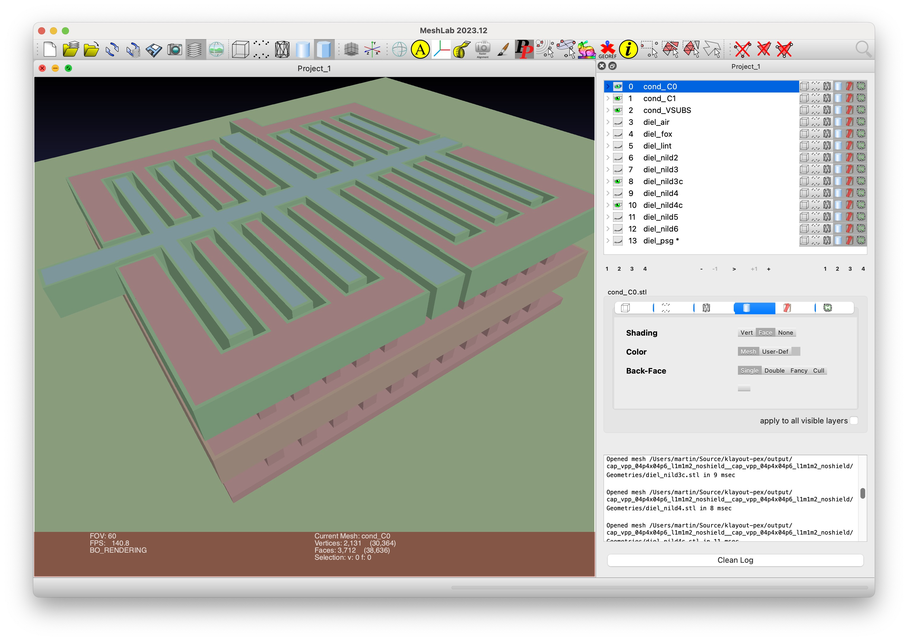
In the log file, we see the output of FasterCap including the Maxwell capacitance matrix:
Capacitance matrix is:
Dimension 3 x 3
g1_VSUBS 5.2959e-09 -4.46971e-10 -1.67304e-09
g2_C1 -5.56106e-10 1.5383e-08 -1.47213e-08
g3_C0 -1.69838e-09 -1.48846e-08 1.64502e-08KPEX interprets this matrix and prints a CSV netlist, which can be pasted into a spreadsheet application:
In addition, a SPICE netlist is generated.
2.4 Running the KPEX/MAGIC engine
Preconditions:
klayout-pexwas installed, see Section 1.5magicwas installed, see Section 1.5
The magic section of kpex --help describes the arguments and their defaults. Important arguments:
--magicrc: specify location of themagicrcfile--gds: path to the GDS input layout--magic: enable magic engine
3 Supporting new PDKs
For every supported PDK2, a KPEX technology definition is required, as well as customized PEX-“LVS” scripts.
3.1 Customized PEX-“LVS” scripts
KLayout has built-in support for Layout-Versus-Schematic (LVS) scripts, based on its Ruby API. Customized “LVS” scripts are (“ab”)used in KPEX, not with the intent of comparing Layout-Versus-Schematic, but rather to extract the connectivity/net information for all polygons across multiple layers. The resulting net information is stored in a KLayout LVS Database (“LVSDB”) within the run directory.
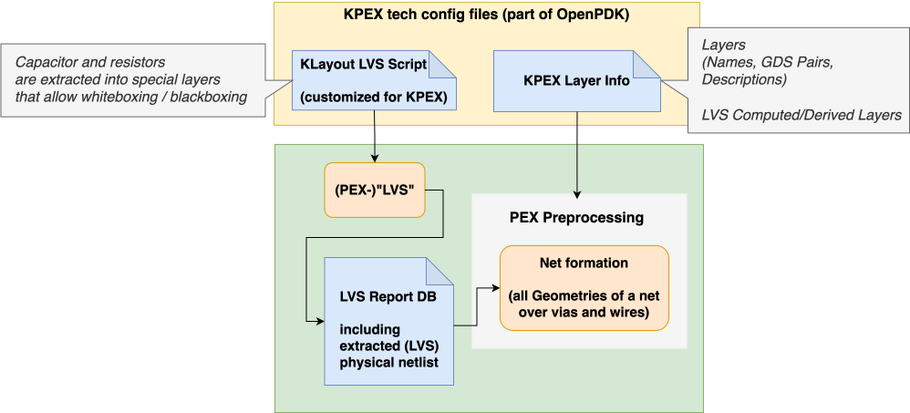
KPEX Net FormationThese customized “LVS” scripts are stored in:
- Skywater sky130A:
pdk/sky130A/libs.tech/kpex/sky130.lvs - IHP SG13G2:
pdk/ihp_sg13gs/libs.tech/kpex/sg13g2.lvs
What’s specific about this customization:
- Layers names must be assigned, using KLayout’s
(name(layer, name))function - MOM3 capacitors, MIM4 capacitors and resistors should be extracted to separate layers, to enable blackboxing / whiteboxing.
The layer names in the script must correspond with the names configured in the tech JSON file.
3.2 Technology Definition Files
The KPEX technology definition format uses Google Protocol Buffers, so there is:
- formal schema files, defining the structure and data types involved
protos/tech.proto: main schema / entry point, includes the othersprotos/process_stack.proto: describes details of the process stack, such as dielectrics and heights of layersprotos/process_parasitics.proto: parasitic tables, used to parametrize the 2.5D engine
- multiple concrete instantiations, that adhere to this schema (called messages in the
protobuflingo)- in the form of JSON files
- Skywater 130A:
klayout_pex_protobuf/sky130A_tech.pb.json - IHP SG13G2:
klayout_pex_protobuf/ihp_sg13g2_tech.pb.json
3.2.1 JSON tech files for supported PDKs
3.2.2 Process Stackup Definition
For 3D solvers, like the KPEX/FasterCap engine, 3D information about the dimensions (e.g. z-offset and thickness) of metal layers is required, as well as the dielectrics in-between.
The Skywater sky130A process includes more intricate types of dielectrics (e.g., compared to IHP sg13g2), therefore I’ll use this PDK as an example here.

sky130A Process Stackup (Source: (Authors 2020))
We can derive the following data from Figure 1:
- Metal layers \(= \{\text{poly}, \text{li}, \text{metal1}, \text{metal2}, \text{metal3}, \text{metal4}, \text{metal5}, \text{capm}, \text{cap2m} \}\)
- thickness
- z-offset (relative to substrate)
- Contact layers \(= \{\text{licon}\}\)
- Via layers \(= \{\text{mcon}, \text{via1}, \text{via2}, \text{via3}, \text{via4}\}\)
- Dielectrics
- dielectric constant \(k\), the relative permittivity of the dielectric material
- Different types:
- Sidewall dielectrics \(= \{\text{IOX}, \text{SPNIT}, \text{NILD3\_C}, \text{NILD4\_C}\}\)
- width of the sidewall around metals
- height above metal
- Conformal dielectrics \(= \{\text{LINT}, \text{TOPNIT}, \text{capild}\}\)
- thickness above metal
- thickness where no metal
- thickness of the sidewall
- Simple dielectrics \(= \{\text{PSG}, \text{NILD2}, \text{NILD3}, \text{NILD4}, \text{NILD5}, \text{NILD6}\}\)
- embracing everything between 2 layers, including the sidewall and conformal dielectrics
- Sidewall dielectrics \(= \{\text{IOX}, \text{SPNIT}, \text{NILD3\_C}, \text{NILD4\_C}\}\)
An except of the process_stack.proto schema is shown in the code listing below, note:
- Line 3:
ProcessStackInfo.LayerTypeis an enumeration type for the possible types of layers in the process stack - Line 58:
ProcessStackInfo.layersis a list ofLayerInfo- the order of this list defines the orders of layers
- Line 41:
MetalLayerdescribes a metal layer - Line 44:
MetalLayer.contact_abovepoints to the via connecting to the metal layer above (omitted for the top metal layer) - Line 31, 38:
ConformalDielectricLayer.referenceandSidewallDielectricLayer.reference- these refer to a dielectric or metal layer that they wrap around
ConformalDielectricLayerandConformalDielectricLayercan be wrapped, e.g.SPNITwrapsIOX, which wrapspoly
message ProcessStackInfo {
enum LayerType { …
LAYER_TYPE_SIMPLE_DIELECTRIC = 50;
LAYER_TYPE_CONFORMAL_DIELECTRIC = 60;
LAYER_TYPE_SIDEWALL_DIELECTRIC = 70;
LAYER_TYPE_METAL = 80;
}
message Contact { // Contact/Via
string name = 1;
string layer_below = 9;
string metal_above = 10;
double thickness = 20;
double width = 30;
double spacing = 31;
double border = 32;
}
…
message SimpleDielectricLayer { // Simple dielectric
double dielectric_k = 10;
string reference = 30;
}
message ConformalDielectricLayer { // Conformal dielectric
double dielectric_k = 10;
double thickness_over_metal = 20;
double thickness_where_no_metal = 21;
double thickness_sidewall = 22;
string reference = 30;
}
message SidewallDielectricLayer { // Sidewall dielectric
double dielectric_k = 10;
double height_above_metal = 20; // might be 0 if none
double width_outside_sidewall = 21;
string reference = 30;
}
message MetalLayer { // Metal
double z = 1; // z-offset in µm (of layer bottom), above substrate
double thickness = 2; // thickness in µm
Contact contact_above = 40;
}
message LayerInfo {
string name = 1;
LayerType layer_type = 2;
oneof parameters { …
SimpleDielectricLayer simple_dielectric_layer = 12;
ConformalDielectricLayer conformal_dielectric_layer = 13;
SidewallDielectricLayer sidewall_dielectric_layer = 14;
MetalLayer metal_layer = 15;
}
}
repeated LayerInfo layers = 100;
}4 KPEX/FasterCap Engine
FasterCap is a 3D and 2D parallel capacitance field solver, inspired by FastCap2. https://www.fastfieldsolvers.com/fastercap.htm
Starting from an input layout (e.g. GDS file) and a process stack-up (part of the Section 3.2), KPEX creates input geometries for FasterCap. After running FasterCap, the Maxwell capacitance matrix is parsed and interpreted to obtain the parasitic capacitances.
See Section 2.3 to get started with a first extraction example.
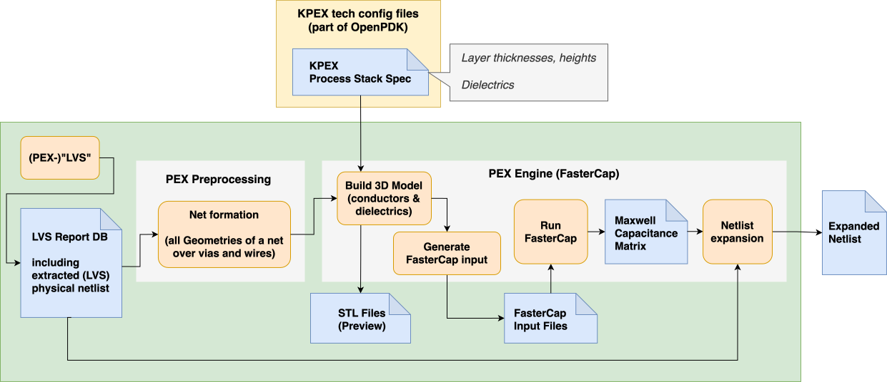
KPEX/FasterCap Engine4.1 3D Input Geometries
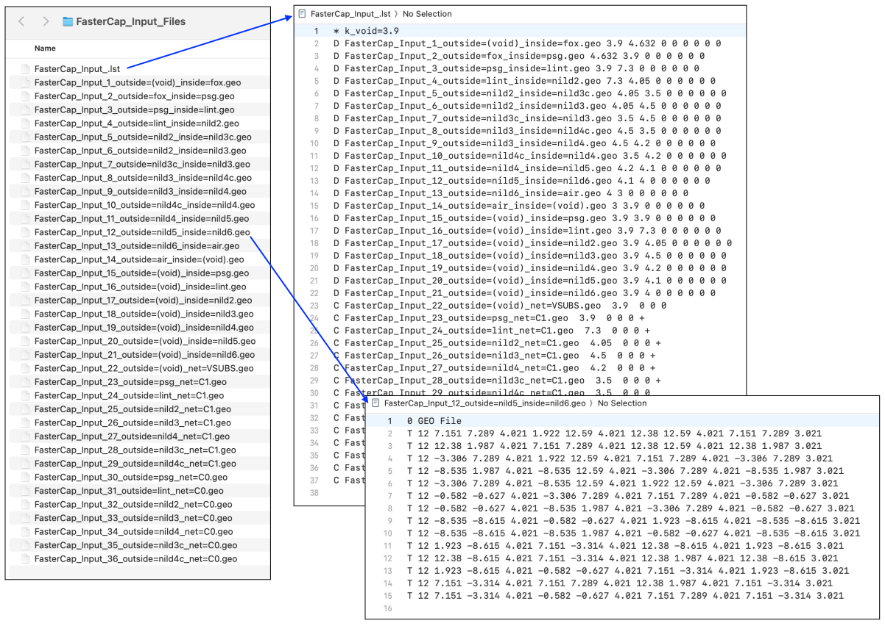
FasterCap 3D Input: File System OverviewThe FasterCap input files and their format is documented in (Di Lorenzo 2019), a PDF version of the Windows-specific *.chm file is available at https://github.com/martinjankoehler/FasterCap/tree/master/doc/pdf.
KPEX generates 3D input geometries:
*.lstfile: Main input file- defines dielectric instances
- defines conductor instances
- each instance refers to a
*.geofile
*.geofiles: Defines single geometry- defines shapes (e.g. triangles)
- Each shape has a reference point to define inside/outsides
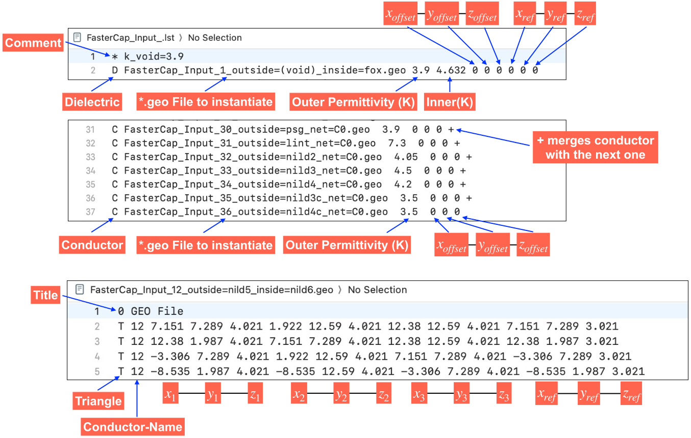
FasterCap 3D Input: File Format4.2 Example: MOM Capacitor
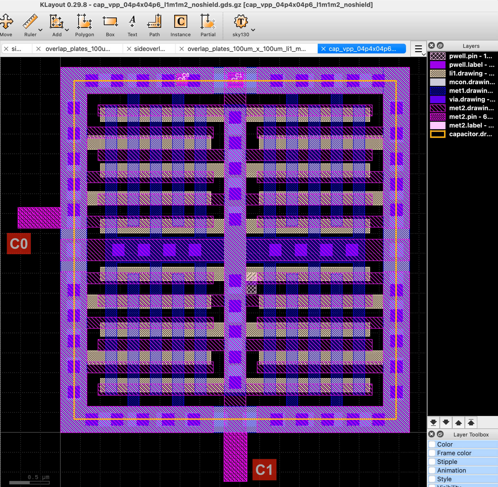
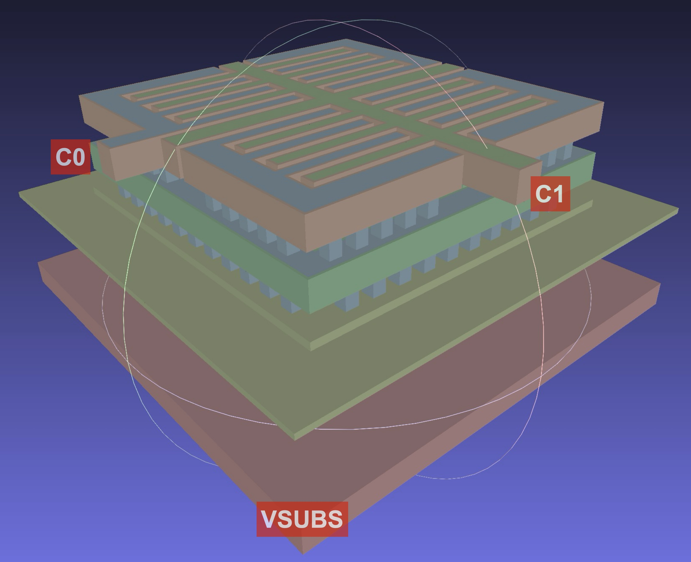
MeshLab 3D PreviewFigure 2 depicts the MOM capacitor example of a from Section 2.3).
The corresponding schematic representation of Figure 3 contains 3 conductors (\(N_1\), \(N_2\) and \(N_3\)), and coupling capacitances:
- Capacitances between conductors: \(C_{ij} \text{ where } i \ne j\)
- \(C_{23}\) is the capacitance “intended” by the MOM designer
- Capacitances between conductors and ground: \(C_{ii}\)
4.3 Output Maxwell Capacitance Matrix
A Maxwell capacitance matrix (Maxwell 1873) provides the relation between voltages on a set of conductors and the charges on these conductors, as described by the FasterCap author in the white paper (Di Lorenzo 2023).
FasterCap log output prints the Maxwell capacitance matrix (one for each iteration/refinement).
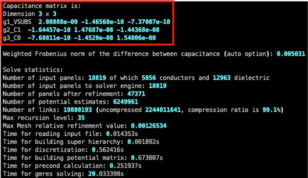
FasterCap Log Output: Maxwell Capacitance Matrix- Matrix Properties:
- Scaling: units have to be divided by \(10^{-6}\)
- rows and columns are the same (list of net names)
- Row Cells:
- off diagonals cells contains the coupling between row/col nets (times \(-1\))
- diagonal cells contains the sum of the absolute values of all other cells in the row
- Matrix Symmetry:
- in theory (ideal world), the matrix would be symmetric
- in practice it’s not
- therefore
FastCap2did average the off-diagonals FasterCapdoes not average, so it’s done as part ofKPEX
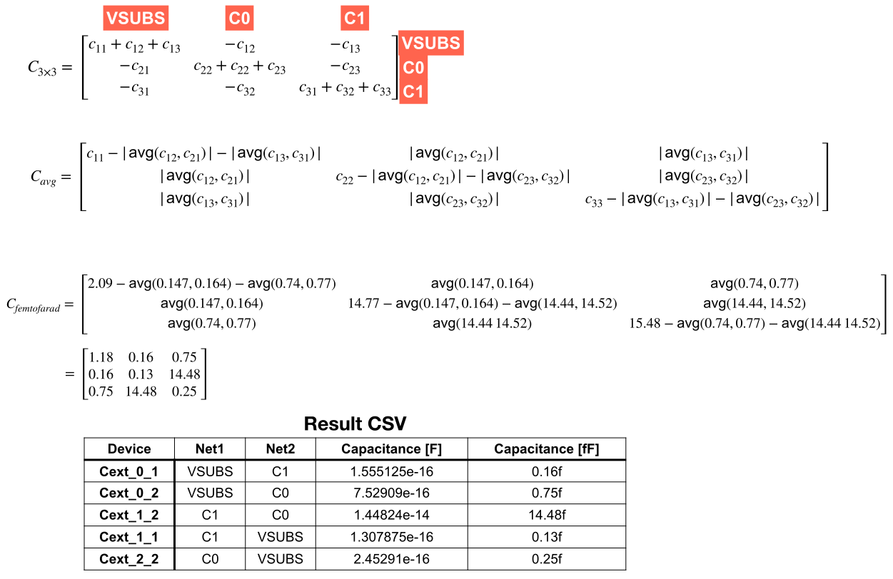
FasterCap Maxwell Capacitance Matrix: Interpretation5 KPEX/MAGIC Engine
This engine is merely just a wrapper around magic, which prepares a TCL script that opens the layout file and starts MAGIC’s PEX flow. See Section 2.4 to get started with a first extraction example.
The following chapter will illustrate concepts of the parasitic extraction done in MAGIC, also motivated by the fact that the engine in Section 6 will be based on those. Major parts of this illustration, the figures and concepts are based on work done by MAGIC maintainer Tim Edwards, especially his talk from FSiC conference 2022 (Edwards 2022) and a (conceptual follow-up) ChipsAlliance meeting on April 4, 2023, see (Edwards 2023b) and (Edwards 2023a). In addition, code review and debugging of the MAGIC codebase was performed.
5.1 MAGIC database units
- To convert between MAGIC database units and \(\mu m\), a scaling factor \(\alpha\) is used, so that \(L_{\mu m} = \frac{L_{dbu}}{\alpha}\)
- E.g. for
sky130A, \(\alpha = 200.0\)
5.2 Types of Parasitic Capacitances
MAGIC models multiple types of capacitances:
- Substrate Overlap: Overlap area of a metal with the substrate
- Substrate Fringing: Sidewall of a metal fringes out to substrate
- Sidewall Capacitance: Coupling between adjacent sidewalls on the same layer
- Overlap Capacitance: Overlap on different metal layers
- Fringe Capacitance (“Side Overlap”): Sidewall of a metal fringes out other metal layers
5.3 Substrate Capacitance
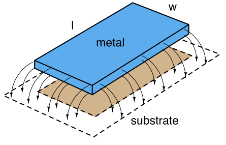
Overlapping area: \[ C_{area} = \frac{\epsilon_{si} * K}{d} * \text{area} \,\,\,\,\,\,\, \left[ \frac{F}{\mu m^2} * \mu m^2\right] \]
Fringe (“Perimeter”): \[ C_{fringe\,to\,substrate} = \text{perimeter} * C_{perim} = (2l + 2w)*C_{perim} \]
Coefficients like \(C_{perim}\) are part of the tech files (Parasitic Tables)
5.4 Sidewall Capacitance
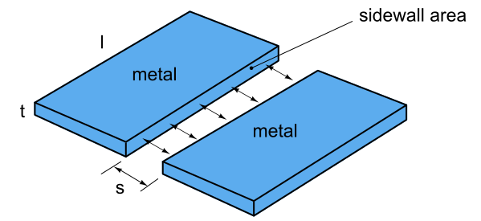
\[ C_{sidewall} = \frac{\epsilon_{si} * K}{s} * \text{sidewall area} \,\,\,\,\,\,\, \left[ \frac{F}{\mu m^2} * \mu m^2\right] \] \[ \,\,\,\,\,\,\,\,\,\,= \frac{\epsilon_{si} * K}{s} * t * l \,\,\,\,\,\,\, \left[ \frac{F}{\mu m^2} * \mu m * \mu m\right] \] \[ C_{sidewall} = \frac{C_{sidewall\,coeff}}{s} * l \,\,\,\,\,\,\, \left[ \frac{F}{\mu m} * \mu m\right] \]
The coefficient describes the coupling between the two facing sidewalls, but MAGIC walks every edge, so each of the two edges contributes half of it:
\[ C_{sidewall\,per\,edge} = \frac{1}{2} * \frac{C_{sidewall\,coeff}}{s} * l \]
- Coefficients are part of the tech files (Parasitic Tables)
- Layer thickness \(t\) is normally multiplied into the coefficient
- Foundry tables give constant coefficient referenced to \(s = 1\)
Warning
defaultsidewall counts once per pair, since MAGIC 8.3.679
Up to MAGIC 8.3.678, each edge was evaluated against the full defaultsidewall value of the tech file, so the sidewall capacitance came out twice as large as intended. Since those values had been distributed with the open PDKs for years, MAGIC 8.3.679 redefined the meaning of the tech file value instead of changing every PDK — the PDKs stay as they are, and MAGIC applies half of the value per edge.
KPEX/2.5D follows that definition, so MAGIC 8.3.679 or newer is required for the two to agree. See https://github.com/martinjankoehler/magic/issues/6#issuecomment-5371056429.
5.5 Overlap Capacitance
- Overlapping area: \[ C_{area} = \frac{\epsilon_{si} * K}{d} * \text{area} \,\,\,\,\,\,\, \left[ \frac{F}{\mu m^2} * \mu m^2\right] \]
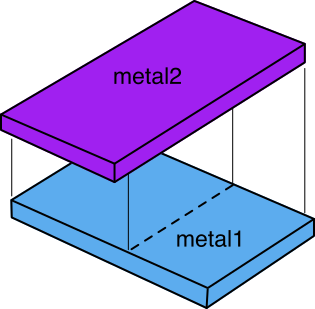
5.6 Fringe Capacitance
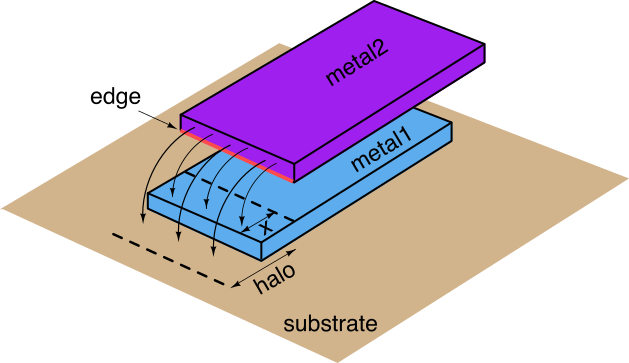
- Causing sidewall (its bottom edge depicted red)
- Assume: Field is bounded by fringe halo (e.g. \(8\, \mu m\) away from edge)
- Fractions of fringe goes to metal1 or substrate
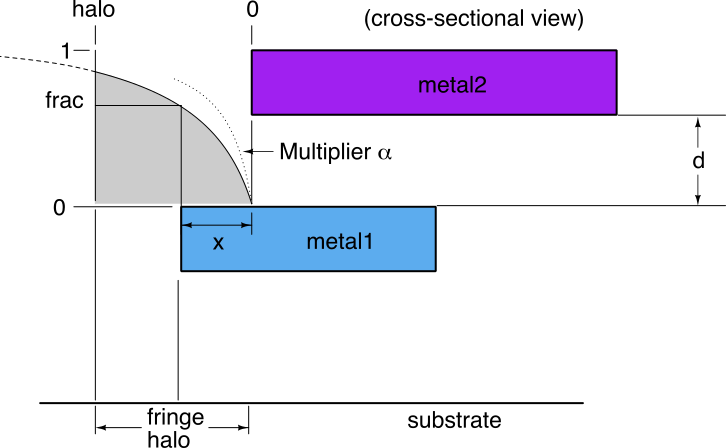
- Multiplier \(\alpha\) (comes from tech files: overlap table)
- determines how quickly fringe capacitance drops with increasing distance
- \(\alpha\) is related to distance \(d\) between layers
- \(\alpha\) is proportional to \(C_{overlap_{metal1 \leftrightarrow metal2}}= \frac{\epsilon_{si} * K}{d} * \text{area}\)
(for fixed value of area \(1\, \mu m^2\))
- Fringe Fractions:
- \(\text{frac}_{metal1} = \tfrac{2}{\pi} * \text{atan}(\alpha_{metal2 \rightarrow metal1}*x)\)
- \(\text{frac}_{sub} = \tfrac{2}{\pi} * \text{atan}(\alpha_{metal2 \rightarrow sub}*(\text{halo}-x))\)
- \(\tfrac{2}{\pi}\) is multiplied because of scaling to interval \([0.0,\,1.0]\), as\(\text{atan}(\infty)=\tfrac{\pi}{2}\)
- Overlap capacitance:
- \(C_{overlap} = \frac{\epsilon_{si} * K}{d} * \text{area} \,\,\,\,\,\,\,\,(\text{with area}=1 \mu m^2)\)
- Coupling capacitance \(metal1 \leftrightarrow metal2\):
- \(\alpha_{metal1 \leftrightarrow metal2} = \alpha_{scalefac} * C_{overlap_{metal1 \leftrightarrow metal2}}\)
- \(\text{frac}_{metal1} = \tfrac{2}{\pi} * \text{atan}(\alpha_{metal1 \leftrightarrow metal2}*x)\)
- \(\text{effective length} = \text{edge length} * \text{frac}_{metal1}\)
- \(C_{fringe_{metal2 \rightarrow metal1}} = \text{effective length} * C_{sideoverlap_{metal2 \rightarrow metal1}}\)
- Coupling capacitance \(metal1 \leftrightarrow sub\):
- \(\alpha_{metal1 \leftrightarrow sub} = \alpha_{scalefac} * C_{overlap_{metal1 \leftrightarrow sub}}\)
- \(\text{frac}_{sub} = \tfrac{2}{\pi} * \text{atan}(\alpha_{metal1 \leftrightarrow sub}*(\text{halo}-x))\)
- \(\text{effective length} = \text{edge length} * \text{frac}_{sub}\)
- \(C_{fringe_{metal2 \rightarrow sub}} = \text{effective length} * C_{sideoverlap_{metal2 \rightarrow sub}}\)
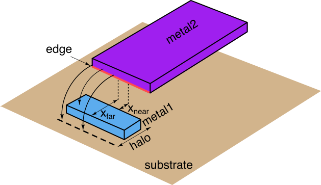
- Partial side overlap
- In case there is only a partial side overlap, the non-existing near fraction is subtracted from the far fraction
- \(metal1\) wire is offset, starts at \(x_{near}\)
- \(metal1\) ends at \(x_{far}\)
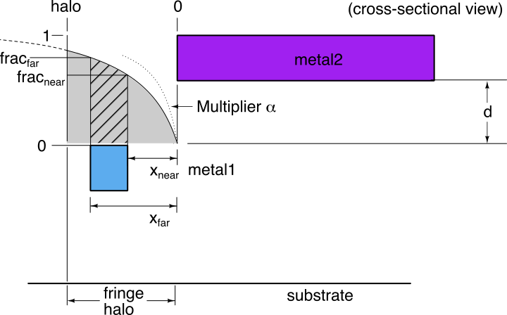
- \(\text{frac}_{near} = \tfrac{2}{\pi} * \text{atan}(\alpha*x_{near})\)
- \(\text{frac}_{far} = \tfrac{2}{\pi} * \text{atan}(\alpha*x_{far})\)
- \(\text{frac} = \text{frac}_{far}-\text{frac}_{near}\)
5.7 Shielding Effects
| Type | Shielding | ||
|---|---|---|---|
| To Substrate | Between layers | On same layer | |
| Overlap shielding | ✔ | ✔ | ✘ |
| Sidewall shielding | ✘ | ✘ | ✔ |
| Lateral fringe shielding | ✘ | ✔ | ✔ |
| Vertical fringe shielding | ✔ | ✔ | ✘ |
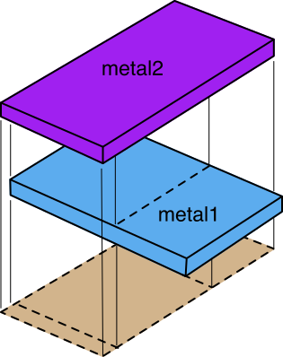
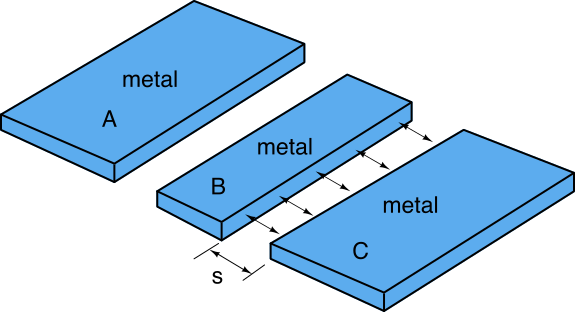
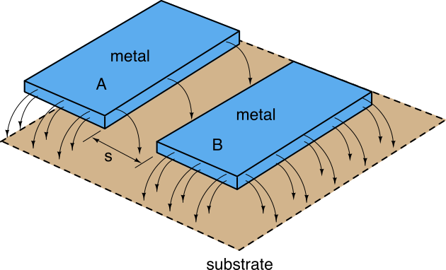
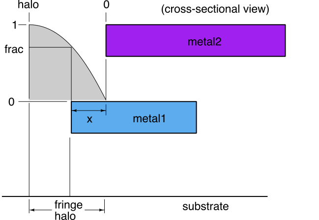
Note, given an analyzed sidewall (edge in 2D), lateral fringe shielding
- is caused by opposing shapes on the same layer
- even by the same polygon
- by other polygons (same net)
- by other polygons (different net) — this is what we also look at when analyzing sidewall coupling
- will shield the fringing to the lower layers, i.e. in Figure 5 the coupling between the two shapes is the same in the above and below cases
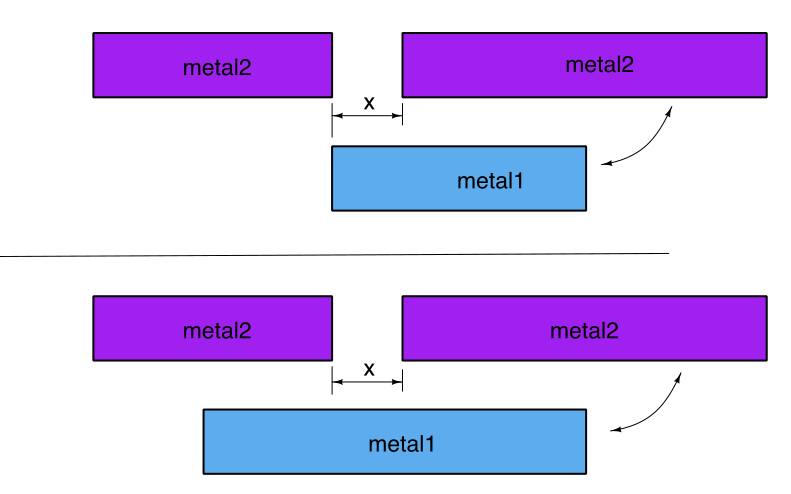
5.8 Parasitic Resistance
Magic constructs a graph of resistors between nodes
- device terminals
- pins
- junctions (vias or branching on the same metal layer)
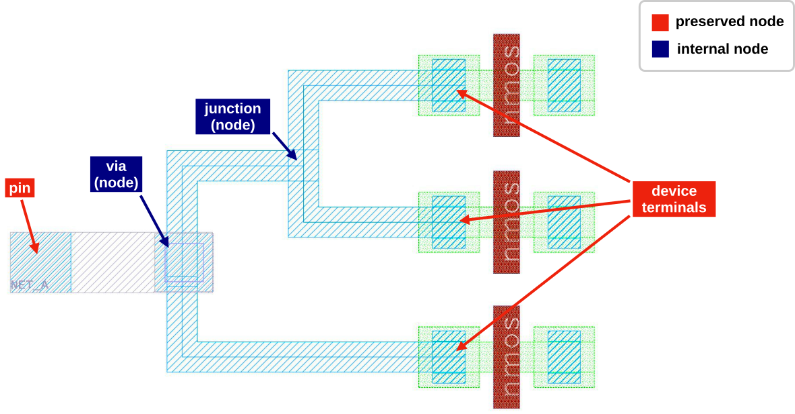
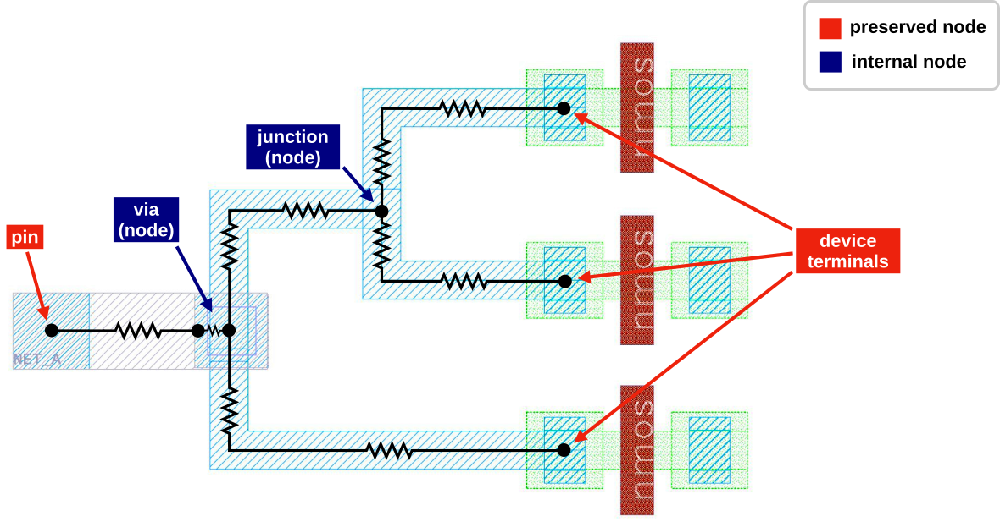
5.8.1 Wire resistance
Given a wire with length \(l\) and height \(h\), the basic formula is \[ R_{wire} = \frac{l}{h} * R_{coeff} \,\,\,\,\,\,\, \left[ \frac{\mu m}{\mu m} * mΩ\right] \]
Coefficient \(R_{coeff}\) is part of the tech files (Parasitic Tables)
- defined for every metal layer
- in \(mΩ\) for \(1\,{\mu m}^2\)
- Coefficient already includes the thickness aspect of the layer, so the formula works in 2D
5.8.2 Via resistance
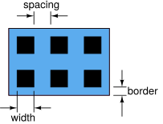
- Given
- drawn via in the layout, with width \(w\) and height \(h\)
- design rules defined for each via layer:
- via width \(viawidth\)
- \(spacing\) between vias (in case of a via array)
- \(border\) on each side of the via
MAGICinterpretation of the via drawing- determine number of vias in \(x\) and \(y\) direction, i.e. \(n_x\) and \(n_y\)
- if \(x\) and \(y\) dimensions are below the minimum size,
MAGICcounts 1 via in each direction - if the dimensions are larger, we calculate how much vias fit
\[ R_{via} = \frac{R_{coeff}}{n_x * n_y} \,\,\,\,\,\,\, \left[\frac{mΩ}{\text{via count}}\right] \]
\[ n_x = 1 + \left\lfloor\frac{w - (viawidth + 2 * border)}{viawidth + spacing}\right\rfloor \]
\[ n_y = 1 + \left\lfloor\frac{h - (viawidth + 2 * border)}{viawidth + spacing}\right\rfloor \]
- Coefficient \(R_{coeff}\) is part of the tech files (Parasitic Tables)
- defined for every via layer
- in \(mΩ\) per via
- Coefficient already includes the thickness aspect of the layer, so the formula works in 2D
6 KPEX/2.5D Engine
This analytical extraction engine is separate from the PEX25D interchange format described in Section 9.1. kpex extract --2.5D selects the engine; kpex pex25d generates a geometry and material description without running an engine.
Field solvers are precise, yet slow, they are useful to obtain a golden reference.
For most use cases, a faster engine is desirable. KPEX/MAGIC is such an engine, but the MAGIC code is tightly coupled with the database, layer/via design choices, and user interface of MAGIC. For example, it runs single-threaded.
Therefore, the KPEX 2.5D Engine intends to implement the concepts and formulas of MAGIC (see Section 5.2), but in a way that is best suited to the KLayout API, and is modular and open for parallel execution.
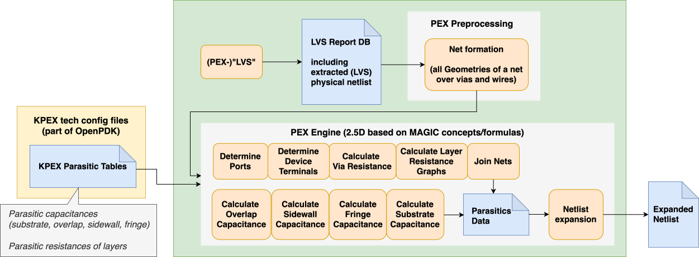
KPEX 2.5D Engine
In Figure 7, we see that as in the KPEX/FasterCap engine (see Section 4), a “LVS” script is used to extract the connectivity information and create an LVS report database.
As mentioned in Section 1.4, KPEX uses the KLayout API. During the coarse of this project, in cooperation with Matthias Köfferlein, the KLayout API was extended, in order to simplify parasitic extraction.
The engine uses those new API classes to extract parasitic capacitances:
klayout.db.PolygonNeighborhoodVisitor(since0.30.1): used during the extraction of overlap capacitances (see Section 5.5)klayout.db.EdgeNeighborhoodVisitor(since0.30.1): used during the extraction of sidewall capacitances (see Section 5.4) and fringe capacitances (see Section 5.6)klayout.db.PolygonWithProperties/klayout.db.EdgeWithProperties/klayout.db.EdgePairWithProperties/klayout.db.BoxWithProperties(since0.30.1): used to store the net information directly within geometry objects
The engine uses those new API classes to extract parasitic resistances:
klayout.pexmodule (since KLayout0.30.2)klayout.pex.RNetExtractor: used to extract resistance networksklayout.pex.RExtractorTech: minimal process stack description for conductor and via layers
7 Comparison KPEX/2.5D with MAGIC
The initial goal of KPEX/2.5D is to basically come up with the same results as KPEX/MAGIC.
Note
Notes about this comparison:
- Version
Magic 8.3 rev 486is used, but augmented with debug logging7, which will be shown and discussed for each example.- NOTE: that revision still counted each sidewall edge against the full
defaultsidewallvalue of the tech file, whichMAGIC 8.3.679corrected (see Section 5.4). Sidewall capacitances are given below under the corrected definition, which is half of what theCapDebugoutput of rev 486 reports.
- NOTE: that revision still counted each sidewall edge against the full
KPEX/MAGIChalo is set to--magic_halo=100000- NOTE: the screenshots however were created with
--magic_halo=8to give better illustrations
- NOTE: the screenshots however were created with
KPEX/2.5Dhalo is set to--halo=100000
7.1 Test Pattern single_plate_100um_x_100um_li1_over_substrate
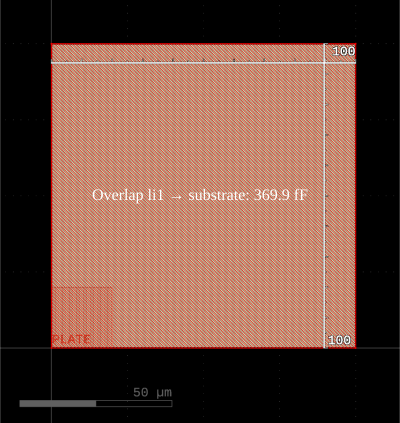
| Description | Layer Top | Net Top | Layer Bottom | Net Bottom | MAGIC [fF] | KPEX/2.5D [fF] | MAGIC Lines |
|---|---|---|---|---|---|---|---|
| Overlap | li1 | li1 | substrate | VSUBS | 369.9 | 369.9 | 4 |
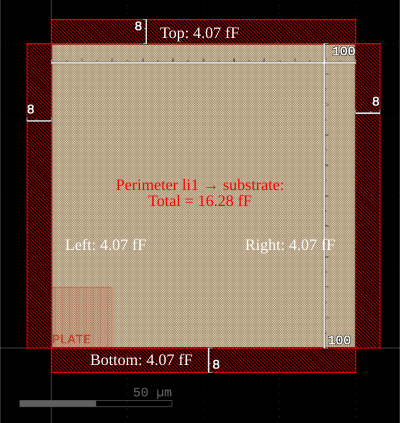
| Description | Layer Top | Net Top | Layer Bottom | Net Bottom | MAGIC [fF] | KPEX/2.5D [fF] | MAGIC Lines |
|---|---|---|---|---|---|---|---|
| Fringe (top) | li1 | li1 | substrate | VSUBS | 4.07 | 4.07 | 5 |
| Fringe (left) | li1 | li1 | substrate | VSUBS | 4.07 | 4.07 | 6 |
| Fringe (right) | li1 | li1 | substrate | VSUBS | 4.07 | 4.07 | 7 |
| Fringe (bottom) | li1 | li1 | substrate | VSUBS | 4.07 | 4.07 | 8 |
Magic 8.3 revision 486 - Compiled on `date`.
----------------------------------------------------
CapDebug (extNodeAreaFunc/Area) layer li(90), net li_0_0#, area=400000000 (10000 µm^2) nreg_cap += 369.9 fF
CapDebug (extNodeAreaFunc/Perimeter/TopSide) layer li(90), net li_0_0#, length=20000 (100 µm), nreg_cap += 4.07 fF (now nreg_cap = 373.97 fF)
CapDebug (extNodeAreaFunc/Perimeter/LeftSide) layer li(90), net li_0_0#, length=20000 (100 µm), nreg_cap += 4.07 fF (now nreg_cap = 378.04 fF)
CapDebug (extNodeAreaFunc/Perimeter/BottomSide) layer li(90), net li_0_0#, length=20000 (100 µm), nreg_cap += 4.07 fF (now nreg_cap = 382.11 fF)
CapDebug (extNodeAreaFunc/Perimeter/RightSide) layer li(90), net li_0_0#, length=20000 (100 µm), nreg_cap += 4.07 fF (now nreg_cap = 386.18 fF)
CapDebug (extSetResist): li_0_0# area=400000000 (10000 µm^2) perim=80000 (400 µm)
CapDebug ---7.2 Test Pattern sidewall_20um_length_distance_200nm_li1
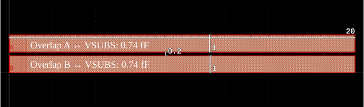
| Description | Layer Top | Net Top | Layer Bottom | Net Bottom | MAGIC [fF] | KPEX/2.5D [fF] | MAGIC Lines |
|---|---|---|---|---|---|---|---|
| Overlap | li1 | A | substrate | VSUBS | 0.7398 | 0.74 | 4 |
| Overlap | li1 | B | substrate | VSUBS | 0.7398 | 0.74 | 11 |
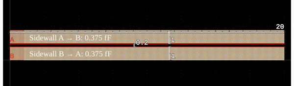
| Description | Layer | Net1 | Net2 | MAGIC [fF] | KPEX/2.5D [fF] | MAGIC Lines |
|---|---|---|---|---|---|---|
| Sidewall | li1 | A | B | 0.375 | 0.375 | 18 |
| Sidewall | li1 | B | A | 0.375 | 0.375 | 21 |
Both edges together therefore couple A and B with \(0.75\,fF\). Lines 18 and 21 of the CapDebug output below still report \(0.75\,fF\) per edge, adding up to \(1.5\,fF\), because they were recorded with rev 486 — the MAGIC column above states that output under the definition of MAGIC 8.3.679.
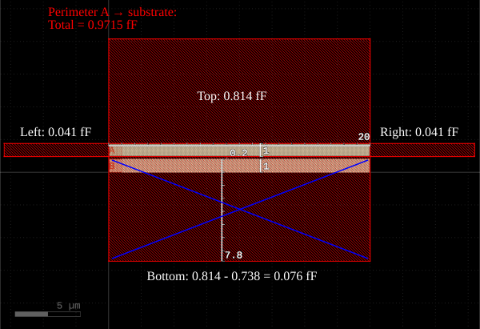
| Description | Layer Top | Net Top | Layer Bottom | Net Bottom | MAGIC [fF] | KPEX/2.5D [fF] | MAGIC Lines |
|---|---|---|---|---|---|---|---|
| Fringe (top) | li1 | A | substrate | VSUBS | 0.814 | 0.814 | 5 |
| Fringe (left) | li1 | A | substrate | VSUBS | 0.0407 | 0.041 | 6 |
| Fringe (bottom) | li1 | A | substrate | VSUBS | 0.814 | 0.076 | 7 |
| Fringe (bottom) | li1 | A | substrate | VSUBS | -0.7379 | — | 19 |
| Fringe (right) | li1 | A | substrate | VSUBS | 0.0407 | 0.041 | 8 |
| Fringe (top) | li1 | B | substrate | VSUBS | 0.814 | 0.076 | 12 |
| Fringe (top) | li1 | B | substrate | VSUBS | -0.7379 | — | 22 |
| Fringe (left) | li1 | B | substrate | VSUBS | 0.0407 | 0.041 | 13 |
| Fringe (bottom) | li1 | B | substrate | VSUBS | 0.814 | 0.814 | 14 |
| Fringe (right) | li1 | B | substrate | VSUBS | 0.0407 | 0.041 | 15 |
Magic 8.3 revision 486 - Compiled on `date`.
----------------------------------------------------
CapDebug (extNodeAreaFunc/Area) layer li(90), net li_0_240#, area=800000 (20 µm^2) nreg_cap += 0.7398 fF
CapDebug (extNodeAreaFunc/Perimeter/TopSide) layer li(90), net li_0_240#, length=4000 (20 µm), nreg_cap += 0.814 fF (now nreg_cap = 1.5538 fF)
CapDebug (extNodeAreaFunc/Perimeter/LeftSide) layer li(90), net li_0_240#, length=200 (1 µm), nreg_cap += 0.0407 fF (now nreg_cap = 1.5945 fF)
CapDebug (extNodeAreaFunc/Perimeter/BottomSide) layer li(90), net li_0_240#, length=4000 (20 µm), nreg_cap += 0.814 fF (now nreg_cap = 2.4085 fF)
CapDebug (extNodeAreaFunc/Perimeter/RightSide) layer li(90), net li_0_240#, length=200 (1 µm), nreg_cap += 0.0407 fF (now nreg_cap = 2.4492 fF)
CapDebug (extSetResist): li_0_240# area=800000 (20 µm^2) perim=8400 (42 µm)
CapDebug ---
CapDebug (extNodeAreaFunc/Area) layer li(90), net li_0_0#, area=800000 (20 µm^2) nreg_cap += 0.7398 fF
CapDebug (extNodeAreaFunc/Perimeter/TopSide) layer li(90), net li_0_0#, length=4000 (20 µm), nreg_cap += 0.814 fF (now nreg_cap = 1.5538 fF)
CapDebug (extNodeAreaFunc/Perimeter/LeftSide) layer li(90), net li_0_0#, length=200 (1 µm), nreg_cap += 0.0407 fF (now nreg_cap = 1.5945 fF)
CapDebug (extNodeAreaFunc/Perimeter/BottomSide) layer li(90), net li_0_0#, length=4000 (20 µm), nreg_cap += 0.814 fF (now nreg_cap = 2.4085 fF)
CapDebug (extNodeAreaFunc/Perimeter/RightSide) layer li(90), net li_0_0#, length=200 (1 µm), nreg_cap += 0.0407 fF (now nreg_cap = 2.4492 fF)
CapDebug (extSetResist): li_0_0# area=800000 (20 µm^2) perim=8400 (42 µm)
CapDebug ---
CapDebug (sidewall): A-B (layer li), overlap=4000 (20 µm), sep=40 (0.2 µm), e->ec_cap=12.75 (0.0255 fF), e->ec_offset=28 (0.14 µm), delta += 0.75 fF … now is 0.75 fF
CapDebug (obsolete_fringe (blocked)): A -= 0.737881 fF … now A == 1.711319 fF
overlapMult=0.003699 (3.699 aF/µm^2) dnear=40 (0.2 µm), snear=0.0935129 (0.000467564 µm), perimCap[90][0]=0.2035 (40.7 /µm), length=4000 (20 µm)
CapDebug (sidewall): A-B (layer li), overlap=4000 (20 µm), sep=40 (0.2 µm), e->ec_cap=12.75 (0.0255 fF), e->ec_offset=28 (0.14 µm), delta += 0.75 fF … now is 1.5 fF
CapDebug (obsolete_fringe (blocked)): B -= 0.737881 fF … now B == 1.711319 fF
overlapMult=0.003699 (3.699 aF/µm^2) dnear=40 (0.2 µm), snear=0.0935129 (0.000467564 µm), perimCap[90][0]=0.2035 (40.7 /µm), length=4000 (20 µm)
exttospice finished.7.3 Test Pattern sideoverlap_simple_plates_li1_m1
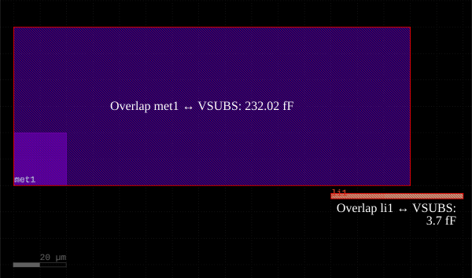
| Description | Layer Top | Net Top | Layer Bottom | Net Bottom | MAGIC [fF] | KPEX/2.5D [fF] | MAGIC Lines |
|---|---|---|---|---|---|---|---|
| Overlap | li1 | li1 | substrate | VSUBS | 3.699 | 3.7 | 7 |
| Overlap | met1 | met1 | substrate | VSUBS | 232.02 | 232.02 | 15 |
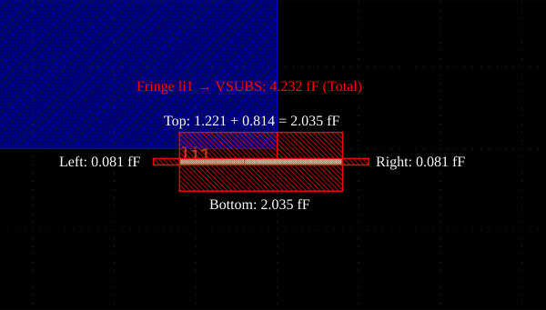
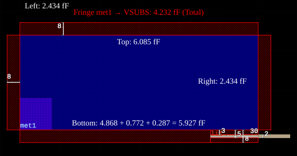
| Description | Layer Top | Net Top | Layer Bottom | Net Bottom | MAGIC [fF] | KPEX/2.5D [fF] | MAGIC Lines |
|---|---|---|---|---|---|---|---|
| Fringe (top) | li1 | li1 | substrate | VSUBS | 2.035 | 2.035 | 9 |
| Fringe (bottom) | li1 | li1 | substrate | VSUBS | 2.035 | 2.035 | 11 |
| Fringe (left) | li1 | li1 | substrate | VSUBS | 0.081 | 0.081 | 10 |
| Fringe (right) | li1 | li1 | substrate | VSUBS | 0.081 | 0.081 | 12 |
| Fringe (top) | met1 | met1 | substrate | VSUBS | 6.0855 | 6.085 | 17 |
| Fringe (bottom) | met1 | met1 | substrate | VSUBS | 6.0855 | 5.927 | 19 |
| Fringe (bottom) | met1 | met1 | substrate | VSUBS | -0.1579 | — | 19 |
| Fringe (left) | met1 | met1 | substrate | VSUBS | 2.4342 | 2.434 | 18 |
| Fringe (right) | met1 | met1 | substrate | VSUBS | 2.4342 | 2.434 | 20 |
Note
MAGIC handles shielding differently than KPEX/2.5D, it first assumes no shield exists, and later subtracts portions to arrive at the shielded value. That’s why the bold cells differ. Line 15 - 20 accumulate contributions, whereas line 34 subtracts a contribution:
- Line 15:
CapDebug (extNodeAreaFunc/Area) layer m1(97), net m1_10000_10000#,area=360000000 (9000 µm^2) nreg_cap += 232.02 fF - Line 17:
CapDebug (extNodeAreaFunc/Perimeter/TopSide) layer m1(97), net m1_10000_10000#,length=30000 (150 µm), nreg_cap += 6.0855 fF (now nreg_cap = 238.105 fF) - Line 18:
CapDebug (extNodeAreaFunc/Perimeter/LeftSide) layer m1(97), net m1_10000_10000#,length=12000 (60 µm), nreg_cap += 2.4342 fF (now nreg_cap = 240.54 fF) - Line 19:
CapDebug (extNodeAreaFunc/Perimeter/BottomSide) layer m1(97), net m1_10000_10000#,length=30000 (150 µm), nreg_cap += 6.0855 fF (now nreg_cap = 246.625 fF) - Line 20:
CapDebug (extNodeAreaFunc/Perimeter/RightSide) layer m1(97), net m1_10000_10000#,length=12000 (60 µm), nreg_cap += 2.4342 fF (now nreg_cap = 249.059 fF) - Line 34:
nreg_cap -= 0.157966 fF (now nreg_cap = 248.901 fF)
Comparison:
KPEX/2.5D: \(4.86834 + 0.77242 + 0.2867 = 5.9275\)MAGIC: \(6.0855 - 0.157966 = 5.9275\)
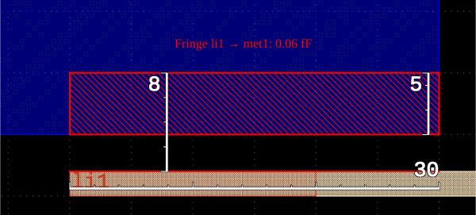
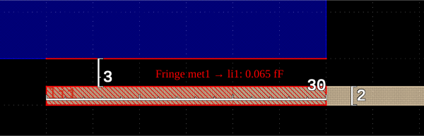
| Description | Layer Top | Net Top | Layer Bottom | Net Bottom | MAGIC [fF] | KPEX/2.5D [fF] | MAGIC Lines |
|---|---|---|---|---|---|---|---|
| Fringe (top) | li1 | li1 | met1 | met1 | 0.598 | 0.06 | 26 |
| Fringe (bottom) | met1 | met1 | li1 | li1 | 0.0654 | 0.065 | 36 |
Magic 8.3 revision 486 - Compiled on `date`.
----------------------------------------------------
Extracting sideoverlap_simple_plates_li1_m1 into /Users/martin/Source/klayout-pex/output_sky130A/sideoverlap_simple_plates_li1_m1__sideoverlap_simple_plates_li1_m1/magic_CC/sideoverlap_simple_plates_li1_m1.ext:
CapDebug (extNodeAreaFunc/Area) layer li(90), net li_34000_9000, area=4000000 (100 µm^2) nreg_cap += 3.699 fF
CapDebug (extNodeAreaFunc/Perimeter/TopSide) layer li(90), net li_34000_9000, length=10000 (50 µm), nreg_cap += 2.035 fF (now nreg_cap = 5.734 fF)
CapDebug (extNodeAreaFunc/Perimeter/LeftSide) layer li(90), net li_34000_9000, length=400 (2 µm), nreg_cap += 0.0814 fF (now nreg_cap = 5.8154 fF)
CapDebug (extNodeAreaFunc/Perimeter/BottomSide) layer li(90), net li_34000_9000, length=10000 (50 µm), nreg_cap += 2.035 fF (now nreg_cap = 7.8504 fF)
CapDebug (extNodeAreaFunc/Perimeter/RightSide) layer li(90), net li_34000_9000, length=400 (2 µm), nreg_cap += 0.0814 fF (now nreg_cap = 7.9318 fF)
CapDebug (extSetResist): li_34000_9000 area=4000000 (100 µm^2) perim=20800 (104 µm)
CapDebug ---
CapDebug (extNodeAreaFunc/Area) layer m1(97), net m1_10000_10000#, area=360000000 (9000 µm^2) nreg_cap += 232.02 fF
CapDebug (extNodeAreaFunc/Perimeter/TopSide) layer m1(97), net m1_10000_10000#, length=30000 (150 µm), nreg_cap += 6.0855 fF (now nreg_cap = 238.105 fF)
CapDebug (extNodeAreaFunc/Perimeter/LeftSide) layer m1(97), net m1_10000_10000#, length=12000 (60 µm), nreg_cap += 2.4342 fF (now nreg_cap = 240.54 fF)
CapDebug (extNodeAreaFunc/Perimeter/BottomSide) layer m1(97), net m1_10000_10000#, length=30000 (150 µm), nreg_cap += 6.0855 fF (now nreg_cap = 246.625 fF)
CapDebug (extNodeAreaFunc/Perimeter/RightSide) layer m1(97), net m1_10000_10000#, length=12000 (60 µm), nreg_cap += 2.4342 fF (now nreg_cap = 249.059 fF)
CapDebug (extSetResist): m1_10000_10000# area=360000000 (9000 µm^2) perim=84000 (420 µm)
CapDebug ---
CapDebug (extSideOverlapHalo): (li-m1) length=30.000000 µm, mult=0.011420, dnear=3.000000 µm (600), dfar=8.000000 µm (1600), snear=0.907713, sfar=0.965163 (cfrac=0.057450)
CapDebug (extSideOverlapHalo) (li-substrate): mult=0.003699, snear=0.730477, sfar=0.893413 (sfrac=0.162935)
CapDebug (extSideOverlapHalo): efflength=1.72351 µm, cap+=0.299029 aF, cap=59.8059 aF, e->ec_cap=0.1735, so_coupfrac=0, subfrac+=0, subfrac=0, so_subfrac=0
CapDebug (sideoverlaphalo): met1-li1 += 0.059806 fF … now met1-li1 == 0.059806 fF
CapDebug ---
CapDebug (extSideOverlapHalo): (m1-li) length=30.000000 µm, mult=0.011420, dnear=3.000000 µm (600), dfar=5.000000 µm (1000), snear=0.907713, sfar=0.944366 (cfrac=0.036653)
CapDebug (extSideOverlapHalo) (m1-substrate): mult=0.002578, snear=0.634619, sfar=0.764408 (sfrac=0.129789)
CapDebug (extSideOverlapHalo): efflength=1.0996 µm, cap+=0.327131 aF, cap=65.4263 aF, e->ec_cap=0.2975, so_coupfrac=0, subfrac+=0, subfrac=0, so_subfrac=0
CapDebug (extSideOverlapHalo/obsolete_perimcap) layer m1(97), net met1,
efflength=3.89366 µm (778.733) = (sfrac(0.129789) - subfrac(0)) * length(30 µm)
exts_perimCap[m1][0] = 0.20285
nreg_cap -= 0.157966 fF (now nreg_cap = 248.901 fF)
CapDebug (obsolete_perimcap): met1 -= 0.157966 fF … now met1 == 248.901423 fF
CapDebug (sideoverlaphalo): met1-li1 += 0.065426 fF … now met1-li1 == 0.125232 fF7.4 Test Pattern r_single_wire_li1
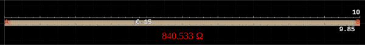
- Wire length \(L = 9.85\,\mu m\)
- Wire height \(H = 0.15\,\mu m\)
- Layer is
li1 - Parasitic Table Coefficient \(R_{coeff}(li1) = 12800\,mΩ\)
If we apply the formula illustrated in Section 5.8.1, we get \[ R_{wire} = \frac{L}{H} * R_{coeff} \] \[ R_{wire} = \frac{9.85\,\mu m}{0.15\,\mu m} * 12800\,mΩ = 8405\dot{3}\,mΩ = 840.5\dot{3}\,Ω \]
Magic 8.3 revision 486 - Compiled on `date`.
----------------------------------------------------
...
Warning: Ports "A" and "B" are electrically shorted.
Location is (1970, -15); drivepoint (1970, -15)
Location is (0, -15); drivepoint (0, -15)
ResCalcEastWest: A (0, -0.075) <-> B (9.85, -0.075) @ li
exts_sheetResist[li]=12800, length=9.85, height=0.15, resistor->rr_value = 840533 mΩ
ResCalcEastWest: A (0, -0.075) <-> B (9.85, -0.075) @ li
exts_sheetResist[li]=12800, length=9.85, height=0.15, resistor->rr_value = 840533 mΩ
Total Nets: 2
Note
MAGIC recognizes that ports A and B are shorted. The purpose of these test patterns is to look at minimized problems in isolation, like the resistance of the wire here. They are not realistic examples, so it appears to be a bug in that corner case, that the resistance is reported twice.
7.5 Test Pattern r_wire_voltage_divider_li1
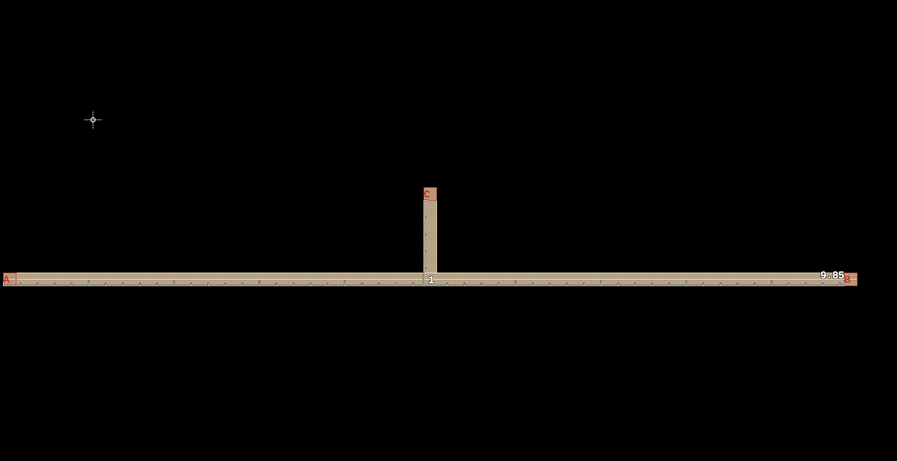
With MAGIC, we get (again, R3-R8 are redundant):
| Description | Layer | Node1 | Node2 | MAGIC [Ω] | KPEX/2.5D [Ω] |
|---|---|---|---|---|---|
| Wire | li1 | A | internal N1 | 426.668 | 426.667 |
| Wire | li1 | B | internal N1 | 413.868 | 413.867 |
| Wire | li1 | C | internal N1 | 72.5338 | 72.533 |
7.6 Test Pattern r_contact_1x1_minsize_mcon
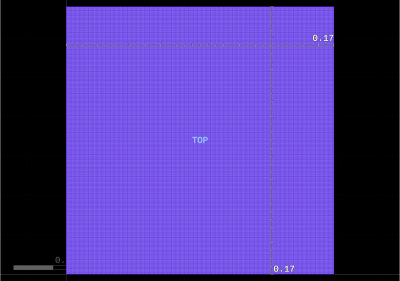
- Layers:
- Top Layer:
met1 - Via:
mcon - Bottom Layer:
li1
- Top Layer:
- Design rules:
- Via width: \(viawidth = 0.17\,\mu m\)
- Via spacing: \(spacing = 0.19\,\mu m\)
- Via border: \(border = 0.0\,\mu m\)
- Parasitic Table Coefficient \(R_{coeff}(mcon) = 9300\,mΩ\)
- Drawn via:
- \(w = 0.17\,\mu m\)
- \(h = 0.17\,\mu m\)
If we apply the formula illustrated in Section 5.8.2, we get
\[ n_x = 1 + \left\lfloor\frac{w - (viawidth + 2 * border)}{viawidth + spacing}\right\rfloor \]
\[ n_x = 1 + \left\lfloor\frac{0.17\,\mu m - (0.17 + 2 * 0.0)\,\mu m}{0.17\,\mu m + 0.19\,\mu m}\right\rfloor = 1 \]
\[ n_y = 1 + \left\lfloor\frac{h - (viawidth + 2 * border)}{viawidth + spacing}\right\rfloor \]
\[ n_y = 1 + \left\lfloor\frac{0.17\,\mu m - (0.17 + 2 * 0.0)\,\mu m}{0.17\,\mu m + 0.19\,\mu m}\right\rfloor = 1 \]
\[ R_{via} = \frac{R_{coeff}}{n_x * n_y} \,\,\,\,\,\,\, \left[\frac{mΩ}{\text{via count}}\right] \]
\[ R_{via} = \frac{9300\,mΩ}{1 * 1} = 9300\,mΩ = 9.3\,Ω \]
| Device | Description | Layer | Node1 | Node2 | MAGIC [Ω] | KPEX/2.5D [Ω] |
|---|---|---|---|---|---|---|
| R2 | Wire | mcon | internal $0.16 |
pin BOT |
0.0 | |
| R1 | Via | li1 | internal $0.16 |
internal $1.23 |
9.3 | 9.3 |
| R3 | Wire | met1 | internal $1.23 |
pin TOP |
0.0 |
MAGIC extraction results are shown below.
Magic 8.3 revision 486 - Compiled on `date`.
----------------------------------------------------
...
Warning: Ports "TOP" and "BOT" are electrically shorted.
Location is (0, 0); drivepoint (0, 0)
Location is (0, 0); drivepoint (0, 0)
ResDoContacts: (null) (0.085, 0.085) <-> (null) (0.085, 0.085) @ v0
W = 0.17 µm, H = 0.17 µm
exts_viaResist[v0]=9300, viawidth=0.17 µm, spacing=0.19 µm, border=0 µm
squaresx=1, squaresy=1, resistor->rr_value = 9300 mΩ7.7 Test Pattern r_via_stack_1x1_minsize_poly_to_met5
On each metal layer, a pin is placed directly in middle of the via.
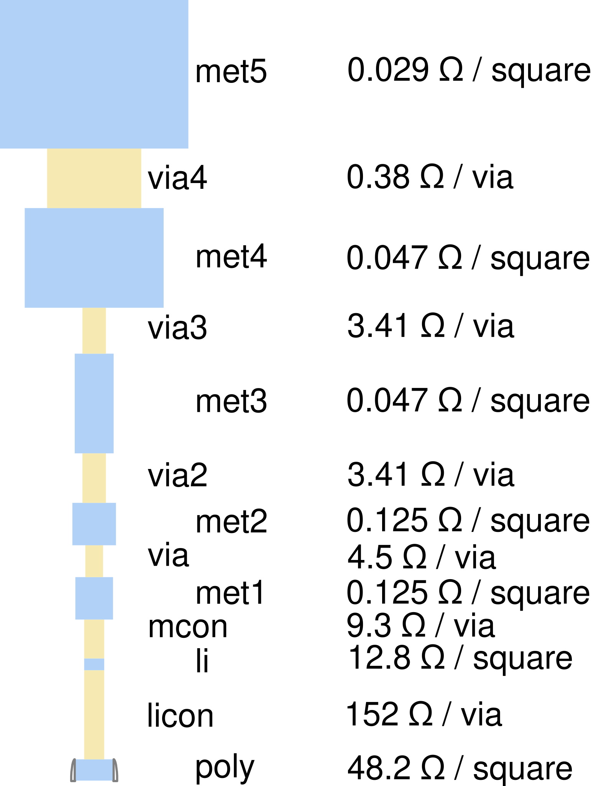
| Device | Description | Layer | Node1 | Node2 | MAGIC [Ω] | KPEX/2.5D [Ω] |
|---|---|---|---|---|---|---|
| R2 | Wire | poly | internal $0.17 |
pin poly |
0.0 | |
| R1 | Via | licon | internal $0.17 |
internal $1.18 |
152.0 | |
| R4 | Wire | li1 | internal $1.18 |
pin li1 |
0.0 | |
| R3 | Wire | li1 | internal $1.18 |
internal $2.18 |
0.0 | |
| R8 | Via | mcon | internal $2.18 |
internal $3.25 |
9.3 | |
| R10 | Wire | met1 | internal $3.25 |
pin met1 |
0.0 | |
| R9 | Wire | met1 | internal $3.25 |
internal $4.25 |
0.0 | |
| R11 | Via | via | internal $4.25 |
internal $5.26 |
4.5 | |
| R13 | Wire | met2 | internal $5.26 |
pin met2 |
0.0 | |
| R12 | Wire | met2 | internal $5.26 |
internal $6.26 |
0.0 | |
| R14 | Via | via2 | internal $6.26 |
internal $7.43 |
3.41 | |
| R16 | Wire | met3 | internal $7.43 |
pin met3 |
0.0 | |
| R15 | Wire | met3 | internal $7.43 |
internal $8.43 |
0.0 | |
| R17 | Via | via3 | internal $8.43 |
internal $9.40 |
3.41 | |
| R18 | Wire | met4 | internal $9.40 |
pin met4 |
0.0 | |
| R6 | Wire | met4 | internal $10.40 |
internal $9.40 |
0.0 | |
| R5 | Via | via4 | internal $10.40 |
internal $11.27 |
0.38 | |
| R7 | Wire | met5 | internal $11.27 |
pin met5 |
0.0 |
KPEX/2.5D extraction results are shown below.
Device;Net1;Net2;Capacitance [fF];Resistance [Ω]
R2;$0.17;poly;;0.0
R1;$0.17;$1.18;;152.0
R4;$1.18;li1;;0.0
R3;$1.18;$2.18;;0.0
R8;$2.18;$3.25;;9.3
R10;$3.25;met1;;0.0
R9;$3.25;$4.25;;0.0
R11;$4.25;$5.26;;4.5
R13;$5.26;met2;;0.0
R12;$5.26;$6.26;;0.0
R14;$6.26;$7.43;;3.41
R16;$7.43;met3;;0.0
R15;$7.43;$8.43;;0.0
R17;$8.43;$9.40;;3.41
R18;$9.40;met4;;0.0
R6;$10.40;$9.40;;0.0
R5;$10.40;$11.27;;0.38
R7;$11.27;met5;;0.0MAGIC extraction results are shown below.
.subckt r_via_stack_1x1_minsize_poly_to_met5 poly li1 met1 met2 met3 met4 met5
R0 li1.n3 poly 175.37
R1 li1.n4 li1.n3 9.3005
R2 li1.n3 li1 6.4005
R3 li1.n4 li1.n2 4.5005
R4 li1.n1 li1.n0 3.4105
R5 li1.n2 li1.n1 3.4105
R6 li1.n0 met5 0.3834
R7 met1 li1.n4 0.063
R8 li1.n2 met2 0.0545541
R9 li1.n1 met3 0.0232879
R10 li1.n0 met4 0.00687288
; removed the redundant devices (5.3.540)
.ends7.8 Test Pattern nfet_li1_redux
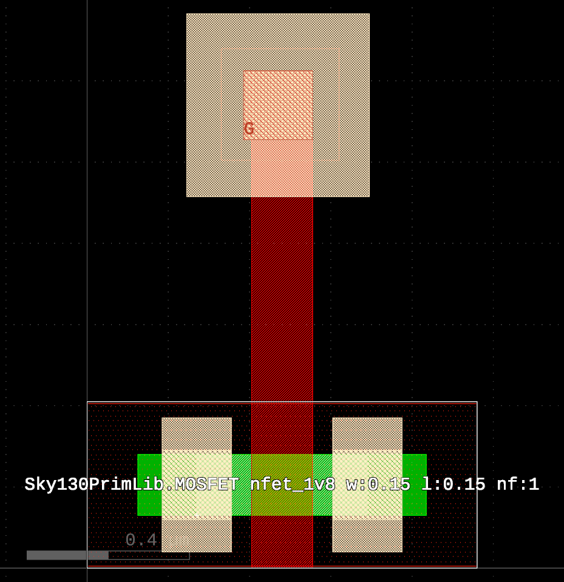
| Device | Description | Layer | Node1 | Node2 | KPEX/2.5D [Ω] |
|---|---|---|---|---|---|
| R1 | Wire | li1 | internal G.$1.17 |
pin G |
2.418 |
| R2 | Via | licon | internal G.$0.16 (poly) |
internal G.$1.17 (li1) |
152.0 |
| R3 | Wire | poly | G.P0.16 (G device terminal) |
internal G.$0.16 |
316.321 |
KPEX/2.5D extraction results are shown below.
MAGIC extraction results are shown below.
Note
Notes about this comparison:
- We can see that MAGIC did not extract the interconnection resistances
- Only exception is
G\(\leftrightarrow\)G.n0, but nodeG.n0is dangling and not connected
7.9 Test Pattern nfet_li1
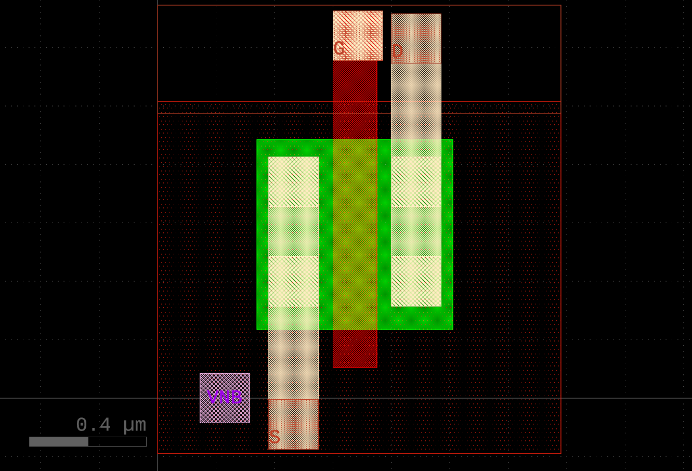
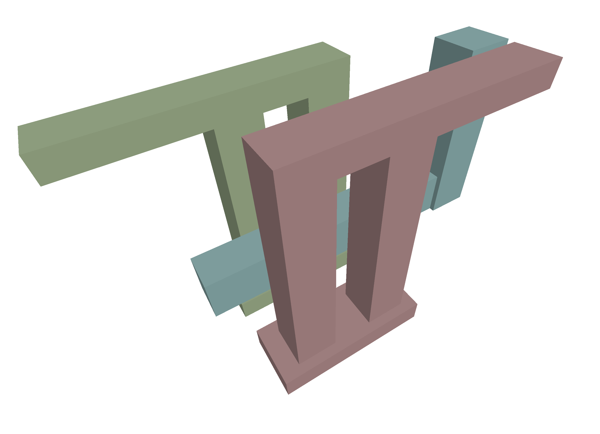
Figure 8 gives an 3D overview over the 3 nets.
KPEX/2.5D extraction results are shown below.
| Device | Description | Layer | Net | Node1 | Node2 | MAGIC [Ω] | KPEX/2.5D [Ω] |
|---|---|---|---|---|---|---|---|
| R1 | Wire | li1 | D |
pin D |
internal D.$3.18 |
30.494 | |
| R4 | Wire | li1 | D |
internal D.$1.18 |
internal D.$3.18 |
25.6 | |
| R2 | Via | licon | D |
internal D.$0.13 (nsdm) |
internal D.$1.18 (li1) |
185.0 | |
| R5 | Via | licon | D |
internal D.$2.13 (nsdm) |
internal D.$3.18 (li1) |
185.0 | |
| R3 | Wire | nsdm | D |
internal D.$0.13 |
D.P0.13 (D device terminal) |
0.0 | |
| R6 | Wire | nsdm | D |
internal D.$2.13 |
D.P0.13 (D device terminal) |
0.0 | |
| R7 | Wire | nsdm | G |
pin G |
internal G.$1.18 |
6.4 | |
| R8 | Via | licon | G |
internal G.$0.17 (poly) |
internal G.$1.18 (li1) |
152.0 | |
| R9 | Wire | poly | G |
internal G.$0.17 |
G.P0.17 (G device terminal) |
234.381 | |
| R10 | Wire | li1 | S |
pin S |
internal S.$1.18 |
43.294 | |
| R13 | Wire | nsdm | S |
internal S.$1.18 |
S.$3.18 (S device terminal) |
0.0 | |
| R11 | Via | licon | S |
internal S.$0.13 (nsdm) |
internal S.$1.18 (li1) |
185.0 | |
| R14 | Via | licon | S |
internal S.$2.13 (nsdm) |
internal S.$3.18 (li1) |
185.0 | |
| R12 | Wire | nsdm | S |
internal S.$0.13 |
S.P0.13 (S device terminal) |
0.0 | |
| R15 | Wire | nsdm | S |
internal S.$2.13 |
S.P0.13 (S device terminal) |
0.0 |
Warning
To improve readability, the illustrations in Figure 9 and Figure 10 do not depict all nodes correctly in regard of the the z-axis orientation
- nodes on metal layers are depicted residing on the top side of the layers and not inside or below the wires / vias
- currently, we treat the metal layer z-axis as an equipotential
- so in reality,
R1,R4,R7,R9would be the whole wire section
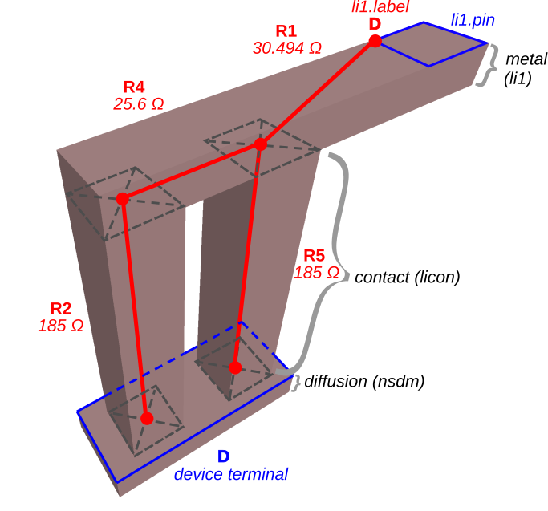
D)”
Figure 9 illustrates the parasitic resistance contributions for net D (all nets can be seen in Figure 8). Net G is illustrated in Figure 10. Net S is not worth showing, as it is similar to net D.
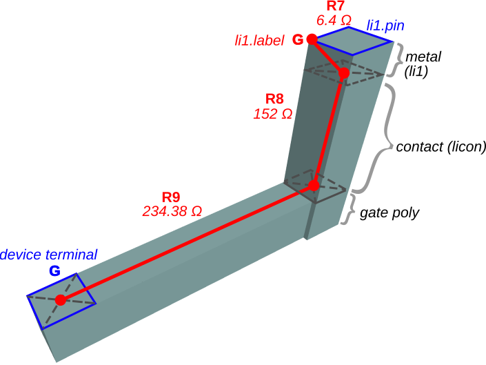
G)”
MAGIC extraction results are shown below.
Note
Notes about this comparison:
- We can see that MAGIC did not extract the interconnection resistances
- Only exception is
G\(\leftrightarrow\)G.n0, but nodeG.n0is dangling and not connected
8 Netlist reduction: Feasibility study
8.1 TICER algorithm: TIme-Constant Equilibration Reduction
This section reviews the original TICER paper (Sheehan 1999), and illustrates the main ideas.
Given \(N\)-terminal star network:
- node \(N\) is the center
- terminals labeled from \(0\) to \(N\!-\!1\) (in Figure 11, \(m\) is used instead of \(N\!-\!1\))
- each branch, going from the terminal \(T_i\) to \(N\), contains a resistor and a capacitor in parallel
- resistor values are given as conductance (easier parallel summation): \(g_{ij}\,\,[\mho]\)
- capacitances values: \(c_{ij}\,\,[F]\)
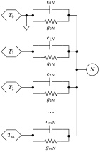
Sum of resistances \(\gamma_N\), and capacitances \(\chi_N\):
\[ \gamma_N = \sum_{k=0}^{N-1} g_{kN}, \quad \chi_N = \sum_{k=0}^{N-1} c_{kN} \tag{1.2} \]
The time constant \(\tau_N\) of a given node \(N\) then is: \[ \tau_N = \frac{\chi_N}{\gamma_N} = \frac{\sum_{k=0}^{N-1} c_{kN}}{\sum_{k=0}^{N-1} g_{kN}} \tag{1.3} \]
Basic node elimination idea: Given a desired frequency window, using the time-constants, we can classify nodes into 3 groups: slow / normal / quick. Then we can eliminate slow and quick nodes, as the normal nodes will suffice to preserve the behavior for the frequency window:
RC circuit in Laplace domain: \[ (s \mathbf{C} + \mathbf{G})\mathbf{v} = \mathbf{Y} \mathbf{v} = \mathbf{J} \tag{2.1} \]
- \(s \in \mathbb{C}\): Complex Frequency
- \(\mathbf{C} \in \mathbb{R}^{N-1 \times N-1}\): nodal capacitances
- \(\mathbf{G} \in \mathbb{R}^{N-1 \times N-1}\): nodal conductances
- \(\mathbf{v} \in \mathbb{R}^{N-1}\): nodal voltages
- \(\mathbf{J} \in \mathbb{R}^{N-1}\): current sources at the nodes
This can be written as a block system: \[ \begin{bmatrix} \mathbf{\tilde{Y}} & \mathbf{y} \\ \mathbf{y}^T & s\chi_N + \gamma_N \end{bmatrix} \begin{bmatrix} \tilde{\mathbf{v}} \\ v_N \end{bmatrix} = \begin{bmatrix} \tilde{\mathbf{J}} \\ j_N \end{bmatrix} \tag{2.2} \]
Note
In equation (2.2), Sheehan uses the tilde accent to name the remainder of the matrix \(\mathbf{Y}\) as \(\mathbf{\tilde{Y}}\), when looking only at the last row and column (same principle applies to vector \(\mathbf{v}\) and \(\mathbf{\tilde{v}}\)): \[\begin{equation} \mathbf{Y} = \left[ \begin{array}{cccc:c} y_{11} & y_{12} & \cdots & y_{1,N-1} & y_{1N} \\ y_{21} & y_{22} & \cdots & y_{2,N-1} & y_{2N} \\ \vdots & \vdots & \ddots & \vdots & \vdots \\ \hdashline y_{N1} & y_{N} & \cdots & y_{N,N-1} & y_{NN} \end{array} \right] = \left[ \begin{array}{c:c} \mbox{\LARGE $\mathbf{\tilde{Y}}$} & \begin{array}{c} y_{1N} \\ y_{2N} \\ \vdots \end{array} \\ \hdashline \begin{array}{cccc} y_{N1} & y_{N2} & \cdots & y_{N,N-1} \end{array} & y_{NN} \end{array} \right] = \left[ \begin{array}{c:c} \mbox{\LARGE $\mathbf{\tilde{Y}}$} & \mbox{\LARGE $\mathbf{y}$} \\ \hdashline \mbox{\LARGE $\mathbf{y}^T$} & y_{NN} \end{array} \right] \end{equation}\]
8.1.2 Quick Nodes
Suppose:
- we eliminate a quick node \(N\)
- \(s\chi_N \ll \gamma_N\)
- equivalently, \(|s \tau_N| \ll 1\)
- we approximate \(\mathbf{E}_{ij}\) from (2.4)
- we eliminate higher-order terms, containing factors like \(s^n\) for \(n \ge 2\)
\[ \begin{aligned} \mathbf{E}_{ij} &= \frac{(g_{iN} + s c_{iN})(g_{jN} + s c_{jN})}{s\chi_N + \gamma_N} \\ &= \frac{g_{iN}g_{jN}}{s\chi_N + \gamma_N} + \frac{s \left( g_{jN} c_{iN} + g_{iN} c_{jN} \right)}{s\chi_N + \gamma_N} + \frac{s^2 c_{iN} c_{jN}}{s\chi_N + \gamma_N} \end{aligned} \]
\[ \mathbf{E}_{ij} \approx \frac{g_{iN}g_{jN}}{\cancel{s\chi_N} + \gamma_N} + s\frac{g_{jN} c_{iN} + g_{iN} c_{jN}}{\cancel{s\chi_N} + \gamma_N} + \cancel{\frac{s^2 c_{iN} c_{jN}}{s\chi_N + \gamma_N}} \]
\[ \mathbf{E}_{ij} \approx \frac{g_{iN}g_{jN}}{\gamma_N} + s\frac{g_{jN} c_{iN} + g_{iN} c_{jN}}{\gamma_N} \tag{3.2} \]
Eliminating a quick node:
Recipe for translating (3.2) into a modified circuit:
- remove all resistors and capacitors connecting other nodes to \(N\)
- insert new resistors and capacitors between former neighbors \(i\), \(j\) of \(N\) according to these rules:
- If nodes \(i\) and \(j\) had been connected to \(N\) through conductances \(g_{iN}\) and \(g_{jN}\), insert conductance \(\frac{g_{iN} g_{jN}}{\gamma_N}\) between \(i\) and \(j\)
- If node \(i\) had a capacitor \(c_{iN}\) to \(N\), and node \(j\) had a conductance \(g_{jN}\) to \(N\), insert a capacitor \(\frac{c_{iN} g_{jN}}{\gamma_N}\) between \(i\) and \(j\)
8.1.3 Slow Nodes
Suppose:
- we eliminate a slow node \(N\)
- \(s\chi_N \gg \gamma_N\)
- equivalently, \(|s \tau_N| \gg 1\)
- we approximate \(\mathbf{E}_{ij}\) from (2.4)
- we retain terms containing \(s\)
- to preserve DC characteristics, we use \(\frac{g_{iN}g_{jN}}{\gamma_N}\) in place of whatever constant terms come from the equation
- higher-order terms in \(\gamma_N\) and \(s\) are neglected to simplify the expression.
Starting with (2.4):
\[ \mathbf{E}_{ij} = \frac{(g_{iN} + s c_{iN})(g_{jN} + s c_{jN})}{s\chi_N + \gamma_N} \tag{2.4} \]
Given the approximation:
\[ \frac{1}{s \chi_N + \gamma_N} \approx \frac{1}{s \chi_N} \left( 1 - \frac{\gamma_N}{s \chi_N} \right) \tag{4.2} \]
Substitute (4.2) into (2.4):
\[ \begin{aligned} \mathbf{E}_{ij} &\approx \frac{(g_{iN} + s c_{iN})(g_{jN} + s c_{jN})}{s\chi_N}\left(1 - \frac{\gamma_N}{s\chi_N}\right) \\ &\approx \left(\frac{g_{iN}g_{jN}}{s\chi_N} + \frac{\cancel{s} \left( g_{jN} c_{iN} + g_{iN} c_{jN} \right)}{\cancel{s}\chi_N} + \frac{s\cancel{^2} c_{iN} c_{jN}}{\cancel{s}\chi_N}\right)\left(1 - \frac{\gamma_N}{s\chi_N}\right) \\ \end{aligned} \]
Expand:
\[ \begin{aligned} \mathbf{E}_{ij} &= \frac{g_{iN}g_{jN}}{s\chi_N} - \frac{g_{iN}g_{jN} \gamma_N}{s^2 \chi_N^2} \\ &+ \frac{g_{jN} c_{iN} + g_{iN} c_{jN}}{\chi_N} - \frac{\left( g_{jN} c_{iN} + g_{iN} c_{jN} \right) \gamma_N}{s\chi_N^2} \\ &+ \frac{s c_{iN} c_{jN}}{\chi_N} - \frac{\cancel{s} c_{iN} c_{jN} \gamma_N}{\cancel{s}\chi_N^2} \end{aligned} \]
After we remove constant terms:
\[ \begin{aligned} \mathbf{E}_{ij} &\approx \frac{g_{iN}g_{jN}}{s\chi_N} - \frac{g_{iN}g_{jN} \gamma_N}{s^2 \chi_N^2} - \frac{\left( g_{jN} c_{iN} + g_{iN} c_{jN} \right) \gamma_N}{s\chi_N^2} + s \frac{c_{iN} c_{jN}}{\chi_N} \end{aligned} \]
Remove higher-order terms in \(\gamma_N\) and \(s\):
\[ \begin{aligned} \mathbf{E}_{ij} &\approx \frac{g_{iN}g_{jN}}{s\chi_N} + s \frac{c_{iN} c_{jN}}{\chi_N} \end{aligned} \]
Sheehan arrives at (4.1):
\[ \mathbf{E}_{ij} \approx \frac{g_{iN}g_{jN}}{\gamma_N} + s\frac{c_{iN} c_{jN}}{\chi_N} \tag{4.1} \]
- Rules:
- If nodes \(i\) and \(j\) had been connected to \(N\) through conductances \(g_{iN}\) and \(g_{jN}\), insert conductance \(\frac{g_{iN} g_{jN}}{\gamma_N}\) from \(i\) to \(j\)
- If node \(i\) had a capacitor \(c_{iN}\) to \(N\), and node \(j\) had a capacitor \(c_{jN}\) to \(N\), insert a capacitor \(\frac{c_{iN} c_{jN}}{\gamma_N}\) from \(i\) to \(j\)
8.2 TICER 2007 paper: Pseudocode
This section reviews some aspects of the 2007 TICER paper (Sheehan 2007).
User-supplied algorithm parameters:
- Set of \(\mathbf{fixed}\) nodes (designated to be left alone, i.e., not to be eliminated)
- \(\mathbf{MaxDeg} \in \mathbb{N}\!\setminus\!\{0, 1\}\): number of passes (user-supplied parameter)
- \(f^{\text{max}}\): maximum operating frequency of interest
- \(\epsilon \in \mathbb{R}_{[0,1]}\): small number enforcing the requirement that \(|s \tau_N| \ll 1\)
In the paper, figure 5 and 6 demonstrate the algorithm for eliminating a quick node (here is a python conversion of those).
def eliminate_quick_node(N: Node):
neighbors = nodes_incident_to(node=N)
for i in neighbors:
g_iN = conductance[i, N]
if g_iN == 0:
continue
for j in neighbors:
if i <= j:
continue
g_jN = conductance[j, N]
c_jN = capacitance[j, N]
gamma_N = incident_conductance_sum(node=N)
if g_jN > 0:
add_conductance(i, j, g_iN * g_jN / gamma_N)
if c_jN > 0:
add_capacitance(i, j, g_iN * c_jN / gamma_N)
remove_all_incident_conductances_and_capacitances(i, N)def ticer(freq_max: float, epsilon: float, max_deg: int):
for deg in range(2, max_deg):
Q = queue.Queue(nodes_not_fixed())
while not Q.empty():
N = Q.get() # pop
if number_of_incident_resistors(N) > deg:
continue
tau_N = time_constant(N)
if 2 * math.pi * freq_max * tau_N <= epsilon:
# ensure the neighbors are in the queue,
# because the neighbors' incident resistors and time constants
# might have been changed, so they should be reconsidered for elimination
missing_neighbors = [n in nodes_incident_to(node=N) if n not in Q]
q.push(missing_neighbors)
eliminate_quick_node(N)
# NOTE: "leaf node" N means, number_of_incident_resistors(N) == 1
for N in leaf_nodes():
if N in fixed_nodes(): # N is protected
continue
tau_N = time_constant(N)
if 2 * math.pi * freq_max * tau_N <= epsilon:
eliminate_quick_node(N)8.2.1 Pseudocode for slow node elimination
Sheehan mentions that elimination of slow nodes is of reduced importances, and therefore does not explicitly provide pseudocode for this case, instead refers to the original TICER paper (Sheehan 1999).
So if we fill in the gaps we arrive at:
def eliminate_slow_node(N: Node):
neighbors = nodes_incident_to(node=N)
for i in neighbors:
g_iN = conductance[i, N]
c_iN = capacitance[i, N]
for j in neighbors:
if i <= j:
continue
g_jN = conductance[j, N]
c_jN = capacitance[j, N]
gamma_N = incident_conductance_sum(node=N)
if g_iN > 0 and g_jN > 0:
add_conductance(i, j, g_iN * g_jN / gamma_N)
if c_iN > 0 and c_jN > 0:
add_capacitance(i, j, c_iN * c_jN / gamma_N)
remove_all_incident_conductances_and_capacitances(i, N)To integrate this into the algorithm, we additionally need a minimum frequency \(f^{\text{min}}\) parameter supplied by the user.
def ticer(freq_min: float, freq_max: float, epsilon: float, max_deg: int):
for deg in range(2, max_deg):
Q = queue.Queue(nodes_not_fixed())
while not Q.empty():
N = Q.get() # pop
if number_of_incident_resistors(N) > deg:
continue
tau_N = time_constant(N)
if 2 * math.pi * freq_max * tau_N <= epsilon:
# NOTE: ensure the neighbors are in the queue,
# because the neighbors' incident resistors and time constants
# might have been changed, so they should be reconsidered for elimination
missing_neighbors = [n in nodes_incident_to(node=N) if n not in Q]
q.push(missing_neighbors)
eliminate_quick_node(N)
if 2 * math.pi * freq_min * tau_N <= epsilon:
# NOTE: ensure the neighbors are in the queue,
# because the neighbors' incident resistors and time constants
# might have been changed, so they should be reconsidered for elimination
missing_neighbors = [n in nodes_incident_to(node=N) if n not in Q]
q.push(missing_neighbors)
eliminate_slow_node(N)
# NOTE: "leaf node" N means, number_of_incident_resistors(N) == 1
for N in leaf_nodes():
if N in fixed_nodes(): # N is protected
continue
tau_N = time_constant(N)
if 2 * math.pi * freq_max * tau_N <= epsilon:
eliminate_quick_node(N)8.3 Example from TICER 2007 paper
Let’s reduce the example presented by Sheehan in the from the 2007 paper (Sheehan 2007), as shown in Figure 12. The goal is to eliminate the quick node \(v_3\).
- Time constant \(\tau_{v_3} = \frac{c_3}{g_{13} + g_{23}}\)
- Quick node condition: \(\text{is\_quick}(N) := 2 \pi f^{\text{max}} \tau_N < \epsilon\)
Elimination of node \(N_2\):
- Incident devices \(R_{13}\), \(R_{23}\), \(C_{3}\) are removed
- New devices for neighbors
- Between nodes \((v_0, v_1)\):
- add \(c_{10} = \frac{g_{13}*c_{3}}{g_{13} + g_{23}}\)
- Between nodes \((v_0, v_2)\):
- add \(c_{20} = \frac{g_{23}*c_{3}}{g_{13} + g_{23}}\)
- Between nodes \((v_1, v_2)\):
- add \(g_{12} = \frac{g_{13}*g_{23}}{g_{13} + g_{23}}\)
- Between nodes \((v_0, v_1)\):
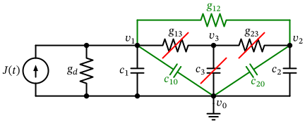
8.3.1 Modified Nodal Analysis in the Laplace domain
RC circuit in Laplace domain:
\[ (s \mathbf{C} + \mathbf{G})\mathbf{v} = \mathbf{Y} \mathbf{v} = \mathbf{J} \tag{2.1} \]
Solve for voltages:
\[ \mathbf{v} = (s \mathbf{C} + \mathbf{G})^{-1} \mathbf{J} = Y^{-1} \mathbf{J} \]
Transfer function:
\[ H(s) = \frac{\mathbf{v}(s)}{\mathbf{J}(s)} = Y^{-1}(s) = (s \mathbf{G} + \mathbf{C})^{-1} \]
E.g. the transfer function (for input \(J_1(s)\), output \(V_2(s)\)) is:
\[ H(s) = \frac{\text{adj}(s \mathbf{C} + \mathbf{G})_{21}}{det(s \mathbf{C} + \mathbf{G})} \]
8.3.2 Analysis of the original circuit
So for the original circuit of Figure 12, we have 3 nodes, in addition to GND (\(v_0\)).
So we have 3 nodal equations:
\[ \begin{aligned} c_1 \dot{v_1} + g_d v_1 + g_{13} (v_1 - v_3) &= j_1(t) \\ c_2 \dot{v_2} + g_{23} (v_2 - v_3) &= 0 \\ c_3 \dot{v_3} + g_{13} (v_3 - v_1) + g_{23} * (v_3 - v_2) &= 0 \end{aligned} \]
Laplace domain (MNA9 form):
\[ \left( s \left[ \begin{array}{ccc} c_1 & 0 & 0 \\ 0 & c_2 & 0 \\ 0 & 0 & c_3 \end{array} \right] + \left[ \begin{array}{cccc} g_d + g_{13} & 0 & -g_{13} \\ 0 & g_{23} & -g_{23} \\ -g_{13} & -g_{23} & g_{13} + g_{23} \end{array} \right] \right) \left[ \begin{array}{c} V_{1}(s) \\ V_{2}(s) \\ V_{3}(s) \end{array} \right] = \left[ \begin{array}{c} J_{1}(s) \\ 0 \\ 0 \end{array} \right] \]
So given the values from Sheehan’s numerical example:
- \(g_d = g_{13} = g_{23} = 1\)
- \(c_1 = c_2 = 1\)
- \(c_3 = 0.01\)
Node \(v_3\) is a quick node:
- Time constant: \(\tau_{v_3} = \frac{c_3}{g_{13} + g_{23}} = \frac{0.001}{1 + 1} = 0.0005\)
- Frequency: \(f = \frac{1}{2 \pi \tau_{v_3}} \approx 318.31\,\text{Hz}\)
We have a system with \[ \mathbf{C} = \left[ \begin{array}{ccc} 1 & 0 & 0 \\ 0 & 1 & 0 \\ 0 & 0 & 0.01 \end{array} \right], \mathbf{G} = \left[ \begin{array}{ccc} 2 & 0 & -1 \\ 0 & 1 & -1 \\ -1 & -1 & 2 \end{array} \right] \]
Transfer function:
\[ H(s) = \frac{1}{0.01s^3 + 2.03s^2 + 4.02s + 1} \]
8.3.3 Analysis of the reduced circuit
The reduced circuit in Figure 13 only has 2 remaining nodes (besides GND).
So we have 2 nodal equations:
\[ \begin{aligned} (c_1 + c_{10}) \dot{v_1} + g_d v_1 + g_{12} (v_1 - v_2) &= j_1(t) \\ (c_2 + c_{20}) \dot{v_2} + g_{12} (v_2 - v_1) &= 0 \end{aligned} \]
Laplace domain (MNA10 form):
\[ \left( s \left[ \begin{array}{cc} c_1 + c_{10} & 0 \\ 0 & c_2 + c_{20} \end{array} \right] + \left[ \begin{array}{cccc} g_d + g_{12} & -g_{12} \\ -g_{12} & g_{12} \end{array} \right] \right) \left[ \begin{array}{c} V_{1}(s) \\ V_{2}(s) \end{array} \right] = \left[ \begin{array}{c} J_{1}(s) \\ 0 \end{array} \right] \]
New devices:
- \(c_{10} = \frac{g_{13}*c_{3}}{g_{13} + g_{23}} = \frac{1 * 0.01}{1 + 1} = 0.005\)
- \(c_{20} = \frac{g_{23}*c_{3}}{g_{13} + g_{23}} = \frac{1 * 0.01}{1 + 1} = 0.005\)
- \(g_{12} = \frac{g_{13}*g_{23}}{g_{13} + g_{23}} = \frac{1 * 1}{1 + 1} = 0.5\)
We have a system with:
\[ \mathbf{C} = \left[ \begin{array}{ccc} 1.005 & 0 \\ 0 & 1.005 \end{array} \right], \mathbf{G} = \left[ \begin{array}{ccc} 1.5 & -0.5 \\ -0.5 & 0.5 \end{array} \right] \]
Transfer function:
\[ H(s) = \frac{0.5}{1.010025s^2 + 2.01s + 0.5} \]
8.3.4 Comparison of original and reduced circuits
In the Bode plots, Figure 14 (a) and Figure 14 (b), we see that magnitude and phase responses stays the same up to a certain frequency.
In the original circuit we have an additional pole at \(s = 201\), which is expendable (Figure 15 (a)).
In Figure 15 (b) we remove this pole, for better comparison with the reduced circuit (Figure 15 (c)), where that pole is no longer present, but the others still are.
9 Appendix
9.1 PEX25D File Format: Represent Interconnect Geometry and Materials
The PEX25D format (Parasitic Extraction 2.5D) describes interconnect geometry and materials for exchange between tools. It combines two-dimensional (XY) conductor shapes with a vertical process stack, so a solver adapter can reconstruct the three-dimensional structure without the original layout or PDK files. The same structure can describe an electrostatic capacitance problem and, with resistance parameters and terminals, a DC resistance problem.
This appendix specifies the PEX25D format and explains its protobuf API and command-line tools. The reference implementation writes PEX25D 1.0-rc1. The format version is independent of the KLayout-PEX package version.
NoteThe PEX25D format and the KPEX/2.5D engine
The PEX25D format defines an interchange description. kpex pex25d generates files in this format; pex25d inspects and processes them.
KPEX/2.5D is the analytical extraction engine described in Section 6, selected with kpex extract --2.5D. It uses calibrated technology coefficients and shielding rules. Generating or resolving PEX25D files does not run that engine, and the format does not contain its calibrated capacitance tables.
9.1.1 Why use PEX25D?
- Exchange a physical problem between tools. A layout producer and a solver adapter can agree on conductor identities, geometry, materials, and terminals through one documented interface. The adapter does not need to repeat LVS or understand the producer’s PDK representation.
- Compare different solvers on the same structure. Export one PEX25D description through different solver adapters to compare extracted results using the same conductor geometry, material properties, and net identities. This helps distinguish solver differences from differences in input preparation. For a meaningful comparison, also account for each adapter’s meshing, boundary treatment, and supported format features.
- Inspect and reproduce solver input. Save a readable text file for review, a compact protobuf scene for repeated runs, or a small hand-written example for a bug report. Validation can run before meshing or starting an expensive field solve.
- Change process corners consistently. Only the ground plane and metal profiles declare absolute heights. Via endpoints, dielectric bands, and film growth refer to those profiles, so a change to a metal height propagates through the stack.
INCLUDEcan separate a technology stack from reusable geometry. - Share one resolver across consumers. The protobuf API separates what the author wrote from the resolved scene. Adapters consume the latter and share the interpretation of
CONNECTS,BETWEEN,WRAPS, and terminal intersections. - Pass prepared input directly to C++ engines. Python can prepare and resolve the structure, then forward a binary
PEX25DSceneto a C++ consumer using generated protobuf bindings. The C++ engine needs neither a PEX25D text parser nor a second implementation of stack resolution. This supports keeping preparation in Python while moving computation-intensive work to C++. - Preserve exact dimensions. Coordinates are integer grid units internally. Coincident vertical faces remain equal after relative heights are computed, without accumulating floating-point discrepancies.
The PEX25D format describes the physical interconnect structure. An analytical consumer still needs its own technology data, potentially matched through META technology and the layer names; this does not imply that the current KPEX/2.5D engine reads PEX25D files.
The following are outside the scope of version 1.x:
- Extracted results and fitted parasitic models, including calibrated capacitance tables.
- Inductance.
- Frequency-dependent effects, such as skin effect or dispersive permittivity.
- Self-heating.
- Electromigration.
- Substrate resistance; the ground plane is an ideal 0 V reference.
9.1.2 From layout to solver input
The workflow has four distinct operations:
| Operation | Tool or API | Result |
|---|---|---|
| Generate from layout connectivity and PDK stack | kpex pex25d |
PEX25DFile, optionally also PEX25DScene |
| Read or re-encode a description | Text reader; pex25d convert |
The same artifact kind in another encoding |
| Resolve relative geometry | Resolver; pex25d resolve |
PEX25DScene |
| Mesh and export for a solver | Adapter; pex25d export |
Native solver input files |
The intended project architecture keeps layout and technology preparation in Python and moves computation-intensive portions into C++ engines. The resolved binary scene is the interface between those stages: Python produces it, and C++ reads the same protobuf message through generated bindings. This is the direction for moving computation to C++; it does not mean all current engines have already been ported.
PEX25DFile is the literal, unresolved model: it retains profile references and relative descriptions. The text reader flattens INCLUDE files and groups records by type. Comments, whitespace, and original record order are not preserved, so conversion is not a byte-for-byte text round trip.
PEX25DScene carries absolute Z extents, dielectric roots and wrap depths, conductor geometry grouped by layer, and terminal intersections. When a domain was requested, it contains the resulting box. Without a domain record, the resolver retains finite geometry bounds and leaves boundary selection to the adapter. The scene still describes 2.5D geometry; it is not a triangulated solver mesh.
Resolution is one-way. A scene has no representation in the PEX25D text syntax, and convert cannot reconstruct the original file from it. Keep the file when you want to edit relative stack definitions later.
9.1.3 Artifact filenames and encodings
The filename identifies both the artifact kind (unresolved file or resolved scene) and its encoding. The tools infer these from the following suffixes:
| Conventional filename | Protobuf message | Encoding |
|---|---|---|
name.pex25d |
– | PEX25D textual format |
name.pex25d.pb |
PEX25DFile |
Binary protobuf |
name.pex25d.textpb |
PEX25DFile |
Protobuf text |
name.pex25d.scene.pb |
PEX25DScene |
Binary protobuf |
name.pex25d.scene.textpb |
PEX25DScene |
Protobuf text |
Reading the PEX25D textual format produces a PEX25DFile message in memory.
A trailing .gz enables gzip for any of these filenames. Protobuf text (textpb) uses protobuf field names and braces; it is a different syntax from the PEX25D textual format.
9.1.4 A complete example
Download two_nets.pex25d to try the commands below without a layout or an LVS run. This small, illustrative stack is not calibrated PDK data. Conductor A crosses from met1 to met2 through one explicit via cut and has two terminals. Conductor B is a nearby metal polygon.
# Illustrative stack; these values do not represent a calibrated PDK.
PEX25D 1.0-rc1
UNITS LENGTH um GRID 0.0001
META technology example
META source_cell two_nets
META source_dbu 0.001
GROUND_PLANE subs Z_OFFSETS -0.4 -0.1
METAL met1 Z_OFFSETS 1.0 1.4
METAL met2 Z_OFFSETS 2.0 2.4
VIA via1 CONNECTS met1 met2
DIELECTRIC_BACKGROUND air PERMITTIVITY 1.0
DIELECTRIC_SIMPLE fox WRAPS subs PERMITTIVITY 3.9 \
BETWEEN subs met1
DIELECTRIC_CONFORMAL lint WRAPS met1 PERMITTIVITY 7.3 \
THICKNESS_OVER_WRAPPED 0.1 \
THICKNESS_BESIDE_WRAPPED 0.08 \
THICKNESS_ON_FIELD 0.0
DIELECTRIC_SIMPLE ild WRAPS lint PERMITTIVITY 4.1 \
BETWEEN met1 met2
RESISTANCE TEMPERATURE 25.0
RESISTANCE METAL met1 SHEET 0.125
RESISTANCE METAL met2 SHEET 0.125
RESISTANCE VIA via1 PER_CUT 4.5
CONDUCTOR A neta
CONDUCTOR B netb
BOX CONDUCTOR A LAYER met1 LL 0.0 0.0 UR 1.0 0.5
BOX CONDUCTOR A LAYER via1 LL 0.2 0.1 UR 0.4 0.3
BOX CONDUCTOR A LAYER met2 LL 0.0 0.0 UR 1.0 0.5
POLYGON CONDUCTOR B LAYER met1 \
OUTER 2.0 0.0 3.0 0.0 3.0 1.0 2.0 1.0
TERMINAL input CONDUCTOR A LAYER met1 KIND PIN \
LL 0.0 0.0 UR 0.1 0.5
TERMINAL output CONDUCTOR A LAYER met2 KIND PIN \
LL 0.9 0.0 UR 1.0 0.5
DOMAIN_MARGIN X 4.0 Y 4.0 Z 2.0
The via spans 1.4–2.0 µm: the top of met1 to the bottom of met2. The lint film reaches 0.1 µm above met1 and 0.08 µm beside it. ild fills the band from the bottom of met1 at 1.0 µm to the bottom of met2 at 2.0 µm. Where both dielectrics are present, lint wins because it has wrap depth 1 and ild has depth 2.
For capacitance, A is equipotential despite its two terminals. For resistance, those terminals define the two nodes between which its distributed interconnect is reduced. B has no terminals, so it participates in capacitance but contributes no resistance network.
9.1.5 PEX25D textual format reference
In the syntax templates below, angle brackets identify values to supply; square brackets mark optional clauses. Neither is written literally into a file.
9.1.5.1 Records, versions, and grid units
Files are UTF-8 and line-oriented. Keywords are case-sensitive. Whitespace separates tokens, # starts a comment outside a quoted value, and a trailing backslash continues a record on the next line. Quote metadata values or paths containing whitespace. Clauses within a record must follow the documented order.
PEX25D must be the first record of the top-level file. UNITS must precede numeric records, including numbers brought in by INCLUDE. After these, records can appear in any order and may reference profiles declared later.
A reader accepts minor versions with the same supported major version. It skips an unknown top-level record with a warning; it rejects an unsupported major version. An unknown clause in a known record is an error. A clause keyword such as WRAPS or THICKNESS_ON_FIELD at the beginning of a record is also an error, since it may indicate a missing continuation backslash. An optional version suffix consists of letters, digits, dots, or hyphens and does not affect compatibility; writers should preserve it.
Coordinates, Z offsets, thicknesses, and margins use the declared length unit and must be multiples of GRID. Decimal and scientific notation are accepted, including .5, 5., and 1e-3. There are no per-value unit overrides or thousands separators. To check a length, divide by GRID, round to the nearest integer, and require the quotient to be within \(10^{-6}\) of that integer. A value outside that tolerance is an error, not permission to snap the input geometry.
For UNITS LENGTH um GRID 0.0001, a coordinate of 0.3262 is stored as 3262 grid units. Protobuf represents the grid itself as an exact rational. It stores coordinates in signed 64-bit integers, not floating-point micrometres. Derived vertical positions therefore remain exact. Lateral offsets of non-Manhattan edges can fall off-grid; the specification requires rounding those derived offsets to the nearest grid point.
Permittivity and resistance parameters are material values and are not grid-quantized. The PEX25D grid and the source layout database unit (DBU) are distinct: GRID 0.0001 and a layout DBU of 0.001 µm differ by a factor of ten.
9.1.5.2 Metadata and includes
Metadata records describe provenance and do not change geometry or material interpretation. A key may occur only once across the entire include tree. Unknown metadata keys are silently accepted. Defined keys are technology, process_corner, source_cell, source_layout_hash (for example, sha256:<digest>), source_dbu, and generator. Prefix private keys with a vendor tag such as x-kpex-. If source_dbu is supplied, the grid must divide it exactly.
An included file contains records without its own PEX25D or UNITS header. Relative paths are resolved against the including file’s directory; nested includes are allowed, cycles are errors. For input from stdin, relative includes resolve against the current working directory.
For example, keep the header in design.pex25d, put profiles and material values in stack-typical.inc, and put conductor shapes in geometry.inc:
Both included files use the top-level length unit and grid. Changing the stack include selects another physical corner; it does not supply a new calibration table to an analytical engine.
9.1.5.3 Ground plane, metals, and vias
There must be exactly one ground plane. It occupies an infinite XY slab at 0 V. Ground-plane and metal Z ranges are absolute, with zlow < zhigh. Metals become solids only where conductor shapes are drawn.
A via fills the vertical gap between its ordered endpoints:
\[ z_{\mathrm{low,via}} = z_{\mathrm{high,below}}, \qquad z_{\mathrm{high,via}} = z_{\mathrm{low,above}}. \]
Endpoints may name profiles with Z extents, including the ground plane for substrate or well taps. Contacts landing on different layers need distinct via profiles; contacts with equal heights but different resistances may also need distinct profiles.
Ground-plane, metal, via, dielectric, and background names share a unique profile namespace. Conductor shortnames have a separate namespace, and terminal names another. Shape and terminal LAYER references must select a metal or via, never the ground plane or a dielectric.
A metal profile without shapes is legal. Such an anchor can locate the bottom of a contact at an excluded device layer without introducing that layer’s solid. It has no resistance requirement and does not enlarge the computational domain or overlap the ground plane merely because its Z range lies inside it.
9.1.5.4 Dielectrics and material precedence
PERMITTIVITY is relative, isotropic, and frequency-independent; vacuum has a value of 1.0. Exactly one background is required. It fills whatever no conductor, ground plane, or dielectric occupies.
DIELECTRIC_SIMPLE occupies a band across the whole XY plane, from the bottom face of below to the bottom face of above. This differs from VIA CONNECTS, which starts at the lower profile’s top. BETWEEN determines the band’s geometry; WRAPS determines its precedence. A simple fill must wrap the outermost film anchored on its lower object, or the lower object itself if it has no film.
DIELECTRIC_CONFORMAL grows from the surface of the profile it wraps:
| Thickness | Meaning |
|---|---|
THICKNESS_OVER_WRAPPED |
Growth above its top face; zero is flush with that face |
THICKNESS_BESIDE_WRAPPED |
Growth beside its side faces |
THICKNESS_ON_FIELD |
Film where the wrapped object is absent, measured upward from its bottom face; zero leaves no field film |
Thicknesses are incremental along a WRAPS chain. If one film extends 0.006 µm beside a metal and the next extends 0.0431 µm beside that film, the outer extent is 0.0491 µm beyond the metal. A sidewall film is expressed by a conformal record with zero field thickness; there is no separate DIELECTRIC_SIDEWALL record.
Profiles describe grown solids containing the wrapped object, rather than pre-subtracted shells. Material occupancy determines the visible material:
- Conductors and the ground plane take precedence over dielectrics.
- Among dielectrics claiming a point, the smallest
WRAPSdepth wins. A film on a metal, via, or ground plane has depth 1; wrapping another dielectric adds one. - The background fills unclaimed space.
WRAPS references must be acyclic. Overlapping dielectrics at equal depth are ambiguous and invalid; changing record order cannot fix them. Re-anchor the fill or film to express the intended precedence. These rules make stack order in the file a matter of readability rather than material interpretation.
9.1.5.5 Conductors and XY shapes
Each shape is extruded over its layer’s Z extent. A conductor’s shapes are unioned and may be disconnected. Different conductor bodies must not overlap in volume. The meaning of a shared net depends on the analysis:
| Analysis | Meaning of conductors sharing a net |
|---|---|
| Capacitance | All are constrained to one potential; results are combined per net |
| Resistance | Each conductor forms a separate network between its own terminals; external connections belong to the enclosing flow |
The exact, case-sensitive net name FLOATING is reserved for unconnected shielding bodies such as dummy fill. Each floating conductor has its own unknown potential, is reported under its shortname, and must not have terminals. Floating bodies are not shorted together just because they all use that reserved net name.
Boxes use lower-left and upper-right corners. Polygon rings are implicitly closed, so do not repeat the first vertex. An outer ring may be concave; outer and hole rings must be simple. Holes must lie strictly inside their outer ring and may not touch or intersect another ring. Winding direction is immaterial. Use separate polygon records for disconnected regions or an island inside a hole.
Every via cut is an explicit shape. There is no via-array record, and readers do not infer cuts from spacing or enclosure rules. This preserves dielectric gaps between cuts and makes PER_CUT resistance unambiguous.
9.1.5.6 Resistance parameters
Resistance records are optional. There may be at most one reference temperature, one sheet resistance per metal profile, and one per-cut resistance per via profile. SHEET is in ohms per square, and PER_CUT in ohms per cut, independently of the length unit. KPEX technology data stores resistance in milliohms; a producer converting that data divides by 1000.
Missing resistance means unspecified, not zero. A resistance consumer must reject a profile carrying geometry if it has no resistance value. Unused anchor profiles are exempt. A capacitance consumer can ignore resistance parameters.
Sheet resistance is a calibrated electrical property. Do not reconstruct it from the drawn metal thickness or invert it to infer bulk resistivity. Two geometrically equal contacts can likewise have different per-cut resistances, for example when they land on different diffusion types.
The optional temperature coefficients have units of K\(^{-1}\) and K\(^{-2}\):
\[ R(T) = R_{\mathrm{ref}}\left[1 + TC1\,(T-T_{\mathrm{ref}}) + TC2\,(T-T_{\mathrm{ref}})^2\right]. \]
The reader and resolver carry these values through; the consumer applies them at its operating temperature. An absent reference temperature does not imply 25 °C. The enclosing flow must supply it if needed.
9.1.5.7 Terminals and compact-device boundaries
A terminal is the intersection of its rectangular region with the selected conductor’s geometry on one metal or via profile. It must select a non-empty region. Several disjoint pieces may form one electrical node, but a terminal may not partially select a via cut: each selected cut must be covered completely.
KIND PIN denotes a port or probe point. KIND DEVICE_TERMINAL marks the boundary to a compact device model. Omitting KIND leaves the role unspecified. Names are unique among terminals and become network node names.
A metal terminal makes its selected region equipotential over the layer’s thickness; a 3D resistance adapter may choose a drive face. A via terminal is a node at the lower face of the selected cuts. It does not short through the via, so the contact resistance above that node remains part of the extracted network. A conductor with fewer than two terminals contributes no resistance elements.
ImportantTerminal size changes the resistance problem
Everything selected by a terminal is shorted together. A marker covering an entire wire or gate can therefore remove the resistance you intend to extract. Size the region to the pin or device boundary it represents, rather than copying a large enclosing shape.
Geometry owned by a compact model is excluded from the interconnect description to avoid counting its parasitics twice. The specification places the device/interconnect boundary below the contact: diffusion and the device’s internal spreading resistance belong to the device, while the contact and routing above it belong to interconnect extraction. An anchor profile can locate that contact without drawing diffusion geometry.
The lower face selected by DEVICE_TERMINAL is an open boundary of the extracted region, for both capacitance and resistance. This prevents a device contact coincident with the ground-plane surface from becoming a short to 0 V or adding device junction capacitance. Only the marked portion is opened. A substrate tap without a device terminal retains ordinary electrical contact with the ground plane. These are specification requirements for consumers; the current FasterCap adapter does not yet implement device-terminal open faces.
9.1.5.7.1 KLayout-generated terminals
Terminal generation is under development. The current development implementation derives PIN records from labels inside layout pin markers. Each pin region extends one layout DBU from the label in every direction, preserving wire resistance even when the pin marker itself covers a long wire.
Device terminals use LVS terminal geometry on existing conductive profiles. Several disjoint pieces can share one node when their bounding box selects exactly those pieces; an abutting boundary selects a strip one DBU wide inside the interconnect. Generation rejects a box that would select additional interconnect or a node that spans multiple profiles. Names use pin:<label> and device:<instance>:<terminal>, with percent encoding for syntax-sensitive characters and numeric suffixes for uniqueness.
This work also adds exact clipping of Manhattan polygons, including holes and disconnected intersections. Partial clipping of non-Manhattan polygons remains unsupported. Earlier resolver implementations support clipped boxes and whole polygons only. Diffusion/contact terminal generation is still pending; the presence of pin and gate terminals must not be taken as a complete device boundary model.
9.1.5.8 Computational domain
These optional records help adapters select a finite computational region; they do not prescribe boundary conditions. DOMAIN_MARGIN expands the finite geometry bounds in both X and Y directions and only upward in Z. The ground-plane top forms the lower boundary. An adapter may increase the requested clearance but must not reduce it.
Finite geometry includes conductor shapes and laterally bounded conformal films, including their lateral growth. The ground plane, background, simple dielectric bands, field-covering films, and unused anchor profiles do not enlarge those bounds.
DOMAIN_BOX specifies the box directly and takes precedence over DOMAIN_MARGIN if both occur, with a warning. Finite non-ground-plane geometry must fit inside; touching a box face is allowed. The lower Z face normally coincides with the ground-plane top. Without either record, domain choice belongs to the adapter. The current FasterCap/FastCap2 exporter uses the resolved box’s XY extent to bound laterally infinite materials; it does not turn the box into a prescribed six-face boundary condition.
9.1.6 Command-line tools
The klayout-pex package supplies kpex and the separate pex25d entry point. Check command availability with --help; older installed releases may not have these commands.
Reading, validating, converting, resolving, and summarizing an existing artifact do not require a layout, LVS, or a running solver, and their implementation does not import KLayout. Generating from a layout and exporting through the current meshing backend do require KLayout. This is a runtime distinction; the distributed klayout-pex package still declares KLayout as a dependency.
9.1.6.1 Generate from a layout: kpex pex25d
This subcommand runs layout connectivity extraction through LVS, combines it with the selected PDK’s stack and resistance data, and writes artifacts in the PEX25D format before solver execution. The layout example in Section 2.2 shows both outputs. At least one output must be requested, and the two paths must differ.
| Option | Use |
|---|---|
--output_file PATH |
Write an unresolved file; .pex25d, .pex25d.pb, or .pex25d.textpb selects its encoding |
--output_scene PATH |
Write a resolved scene; use .pex25d.scene.pb or .pex25d.scene.textpb |
--format FORMAT |
Select auto, text, pb, or textpb; one setting applies to both requested outputs |
--grid UM |
Grid in µm; default 0.0001, must represent stack dimensions and divide the layout DBU |
--domain_margin UM |
Emit equal X, Y, and upper-Z margins; default is no domain record |
--validate BOOL |
Run reference validation; y (default) or n |
--comments BOOL |
Add syntax hints to text output; y or n (default) |
--with_source_refs BOOL |
Retain per-record provenance in protobuf output; y or n (default) |
Layout, PDK, top-cell, blackboxing, and material selection options are listed by kpex pex25d --help. The artifact’s kind is selected by the output option, so requesting --format text together with --output_scene is invalid. Filenames ending in .gz produce compressed output.
--strict, --werror, --diagnostics, and --diagnostics_out are also available, with the meanings described in Section 9.1.6.2.
Generation can leave artifacts on disk even when validation reports errors. Always inspect the exit status and diagnostics before using them as solver input. In the current Sky130 stack, the nild6/capild anchoring can trigger PEX25D-E0260. For an isolated terminal smoke test, --diel all,-nild6 avoids that conflict, but removes a dielectric from the physical problem and is not a substitute for correcting the stack for capacitance extraction.
9.1.6.2 Validate and inspect
Run these commands in the directory containing the downloaded example:
Normal validation checks syntax, units, references, wrap anchoring and depth conflicts, resistance records, and terminal selection. --strict adds geometric checks for boxes and rings, hole containment, and conductor volume overlap. show summarizes the artifact as supplied; resolve it first when you want to inspect derived layer heights.
--section is repeatable and accepts header, meta, layers, dielectrics, conductors, terminals, resistance, domain, and all. Human-readable summaries and diagnostic wording are not stable APIs.
For automated checks of a custom PEX25D writer, save a structured report and use the exit status:
JSON and binary protobuf reports carry stable PEX25D-Ennnn codes, severity, validation tier, and source positions where available. Use an explicit report path to keep the report separate from console logging. --werror makes warnings fail the run; without it, warnings alone do not fail validation.
| Exit status | Meaning |
|---|---|
0 |
Success |
1 |
Validation or resolution errors, or warnings with --werror |
2 |
Invalid command line, I/O failure, missing dependency, or export failure |
3 |
An operation reports that it is not implemented |
The validator is a reference check, not a guarantee that every adapter implements every specification rule. For example, the current depth-tie check detects competing profiles on the same wrap root; it is not a complete geometric intersection check for films on different roots. Terminal-boundary support must also be checked at the adapter level.
9.1.6.3 Convert encodings and resolve a scene
pex25d convert two_nets.pex25d -o two_nets.pex25d.pb
pex25d convert two_nets.pex25d.pb -o two_nets.pex25d.textpb
pex25d convert two_nets.pex25d.pb -o two_nets-copy.pex25d --comments
pex25d convert two_nets.pex25d -o two_nets.pex25d.pb.gz
pex25d resolve two_nets.pex25d -o two_nets.pex25d.scene.pb --strict
pex25d convert two_nets.pex25d.scene.pb -o two_nets.pex25d.scene.textpb
pex25d validate two_nets.pex25d.scene.pb --strict
pex25d show two_nets.pex25d.scene.pb --section layers --section domainconvert changes encoding within one kind; it does not validate the complete physical problem. resolve computes the scene and accepts --strict, --werror, and the diagnostics options. Validate before passing a resolved scene to an exporter as well: the current export path resolves file input, but does not automatically run the reference validator on an already-resolved scene.
Use --with_source_refs on text conversion or resolution when you want the protobuf artifact to retain locations in an include tree. Diagnostics produced while reading text have source positions even without that flag. --comments adds syntax hints when writing PEX25D text; unlike the kpex option, it is a flag and takes no y argument.
9.1.6.4 Export native solver input
Both targets use the shared FasterCap/FastCap2 list-file exporter. The output directory contains a .lst entry file and its referenced surface files; keep them together. File input is resolved automatically. Export generates meshes and input files, without running the solver or producing a capacitance matrix. The solver executable is needed when those files are subsequently solved. kpex extract is the separate integrated flow for running engines from a layout.
The backend also supports STL output and mesh controls through ExporterOptions. The current pex25d export --help lists --stl, --field_margin, --delaunay_amax, --delaunay_b, and --geo_check, but the CLI does not forward them to the backend. They therefore have no effect through the current CLI. Use the API shown below for these controls. The default lateral field margin is 8 µm when the scene has no explicit or margin-derived domain.
The current exporter is for capacitance input. It does not extract a resistance network from SHEET, PER_CUT, or terminal records, and there is no elmer or analytical 2.5d target in this CLI.
9.1.6.5 Pipelines and explicit encodings
A path of - means stdin for input and stdout for output. Artifact output reserves stdout and redirects logging and diagnostics to stderr. Use explicit kinds and encodings in a binary pipeline:
For filenames without conventional suffixes, supply both --in_kind file|scene and --in_format text|pb|textpb, or the corresponding --out_kind and --out_format. These are options of the standalone tool; kpex pex25d uses its output options and --format instead. Stdin defaults to unresolved text, while resolve defaults to binary scene output on stdout. Gzip is inferred from filenames; use a shell gzip tool when compressing a stream.
9.1.7 Protobuf API: Python Preparation and C++ Consumers
The PEX25D schemas define the file and scene messages, exact units, geometry, dielectric and resistance records, terminals, domain, diagnostics, and source references. Generated bindings let another language read binary artifacts without implementing the text parser. An adapter should consume PEX25DScene and use the shared resolver for file input.
One import is enough: from klayout_pex import pex25d provides the verbs read, write, resolve, validate, export and show, the artifact and diagnostics types, every error the pipeline raises, and pex25d.proto for the generated messages (pex25d.proto.PEX25DFile(), or a module such as pex25d.proto.dielectric for its enums). Names listed in pex25d.__all__ are the supported surface, while the submodules stay importable for the classes behind the verbs, e.g. resolver.Resolver and validator.Validator.
read() and write() take a path in any supported encoding and derive kind and encoding from the conventional suffixes (Section 9.1.3); read_text() and write_text() work on the bytes of the text format. validate() fills a diagnostics report and never raises for an invalid message; resolve() computes the scene and raises ResolveError when resolution cannot proceed. The package depends on protobuf alone, so it can be installed as a reference reader and validator without klayout.
This Python example loads and resolves the downloadable file, then requests native FasterCap input and STL solids through the exporter API:
from klayout_pex import pex25d
report = pex25d.DiagnosticsReport(warnings_are_errors=True)
description = pex25d.read("two_nets.pex25d", report=report, with_source_refs=True)
scene = pex25d.resolve(description, report=report)
pex25d.validate(description, report=report, strict=True, scene=scene)
if report.exit_code:
raise RuntimeError("PEX25D validation failed")
pex25d.write(scene, "two_nets.pex25d.scene.pb")
paths = pex25d.export(
scene,
target=pex25d.SolverTarget.FASTERCAP,
output_dir_path="solver/api",
prefix="two_nets",
options=pex25d.ExporterOptions(write_stl=True),
)
print(paths[0])A C++ consumer can read the uncompressed binary scene written above using the bindings generated from pex25d_scene.proto and its imports. For example, this complete program loads a scene and reports its size; the extraction engine would then operate on that message:
#include <fstream>
#include <iostream>
#include "kpex/pex25d/pex25d_scene.pb.h"
int main(int argc, char **argv) {
if (argc != 2) {
std::cerr << "Usage: read_scene FILE.pex25d.scene.pb\n";
return 2;
}
std::ifstream input(argv[1], std::ios::binary);
kpex::pex25d::PEX25DScene scene;
if (!input || !scene.ParseFromIstream(&input)) {
std::cerr << "Cannot read PEX25DScene\n";
return 1;
}
std::cout << scene.layers_size() << " layers, "
<< scene.conductors_size() << " conductors\n";
return 0;
}Compile consumers with the generated .pb.cc files and the protobuf C++ runtime. A successful protobuf parse establishes that the binary message can be decoded; reference validation still belongs in the preparation flow, and an engine must check the format version and the features it supports. Keep the .scene kind explicit when exchanging files, since both unresolved files and resolved scenes can use binary protobuf encoding.
When consuming the scene directly, convert grid coordinates using grid_numerator / grid_denominator in the declared length unit. Check scene.domain.origin before using scene.domain.box: the domain message may exist only to carry geometry bounds. Preserve conductor net identities, floating-body independence, resistance units, and terminal boundary semantics when mapping the scene to a solver.
9.2 References
Authors, SkyWater PDK. 2020. “SkyWater Open Source PDK.” May. https://skywater-pdk.readthedocs.io.
Di Lorenzo, Enrico. 2019. “FasterCap Embedded Help.” https://www.fastfieldsolvers.com/Download/FasterCapHelp.chm.
Di Lorenzo, Enrico. 2023. “The Maxwell Capacitance Matrix: White Paper WP110301. Revision 03.” https://www.fastfieldsolvers.com/Papers/The_Maxwell_Capacitance_Matrix_WP110301_R03.pdf.
Edwards, R. Timothy. 2022. Whom Do You Trust? Validating Process Parameters for Open-Source Tools. https://wiki.f-si.org/index.php?title=Whom_do_you_trust%3F:_Validating_process_parameters_for_open-source_tools.
Edwards, R. Timothy. 2023a. Full r-c Extraction in Magic (Presentation Slides). https://lists.chipsalliance.org/g/analog-wg/attachment/99/0/AWG_040423_Tim_Edwards_chips_alliance_slides.pdf.
Edwards, R. Timothy. 2023b. Full r-c Extraction in Magic (Presentation Video). https://www.youtube.com/watch?v=4d2mtiEHHeo.
Maxwell, James Clerk. 1873. A Treatise on Electricity and Magnetism. Vol. 1. Clarendon Press.
Nagel, Laurence W. 1975. “SPICE2: A Computer Program to Simulate Semiconductor Circuits.” PhD Thesis UCB/ERL M520. EECS Department, University of California, Berkeley. http://www2.eecs.berkeley.edu/Pubs/TechRpts/1975/9602.html.
Sheehan, B. N. 1999. “TICER: Realizable Reduction of Extracted RC Circuits.” 1999 IEEE/ACM International Conference on Computer-Aided Design. Digest of Technical Papers (Cat. No.99CH37051), 200–203. https://doi.org/10.1109/ICCAD.1999.810649.
Sheehan, Bernard N. 2007. “Realizable Reduction of \(RC\) Networks.” IEEE Transactions on Computer-Aided Design of Integrated Circuits and Systems 26 (8): 1393–407. https://doi.org/10.1109/TCAD.2007.891374.
Footnotes
Metal-Oxide-Metal capacitors↩︎
Process Design Kit↩︎
Metal-Oxide-Metal capacitors↩︎
Metal-Insulator-Metal capacitors↩︎
C++ generator scripts the built-in tech files are located in
cxx/gen_tech_pb/pdk/*.cpp.↩︎To find the
site-packagesdirectory for theklayout-pexpackage, callpip3 show klayout-pex.↩︎A fork of MAGIC which includes debug logging about the different parasitic contributions is hosted here: https://github.com/martinjankoehler/magic↩︎
The 3D model of this figure was generated by
KPEX/FasterCapand saved as STL files. The screenshot was created by opening the STL files in MeshLab.↩︎Modified Nodal Analysis↩︎
Modified Nodal Analysis↩︎
Reuse
Apache-2.0 license
Citation
BibTeX citation:
@online{köhler2026,
author = {Köhler, Martin},
title = {KLayout-PEX {Documentation}},
date = {2026-09-17},
url = {https://iic-jku.github.io/klayout-pex-website},
doi = {10.5281/zenodo.17822519},
langid = {en-US}
}
For attribution, please cite this work as:
Köhler, Martin. 2026. “KLayout-PEX Documentation.”
September 17. https://doi.org/10.5281/zenodo.17822519.
8.1.1 Comments on page 2, equation \((2.3)\)
To arrive at equations (2.3), (2.4), and (2.5) from equation (2.2), the process involves solving for \(v_N\), the voltage at the node to be eliminated (node \(N\)), and substituting it back into the system of equations.
Starting with equation (2.2):
\[ \begin{bmatrix} \mathbf{\tilde{Y}} & \mathbf{y} \\ \mathbf{y}^T & s\chi_N + \gamma_N \end{bmatrix} \begin{bmatrix} \tilde{\mathbf{v}} \\ v_N \end{bmatrix} = \begin{bmatrix} \tilde{\mathbf{J}} \\ j_N \end{bmatrix} \tag{2.2} \]
we have two block equations:
\[ \mathbf{\tilde{Y}} \tilde{\mathbf{v}} + \mathbf{y} v_N = \tilde{\mathbf{J}} \tag{\small First block equation of 2.2} \]
\[ \mathbf{y}^T \tilde{\mathbf{v}} + (s\chi_N + \gamma_N) v_N = j_N \tag{\small Second block equation of 2.2} \]
Solve the second block equation for \(v_N\): \[ v_N = \frac{j_N - \mathbf{y}^T \tilde{\mathbf{v}}}{s\chi_N + \gamma_N} \]
Substitute the expression for \(v_N\) in the first block equation:
\[ \mathbf{\tilde{Y}} \tilde{\mathbf{v}} + \mathbf{y} \left(\frac{j_N - \mathbf{y}^T \tilde{\mathbf{v}}}{s\chi_N + \gamma_N}\right) = \tilde{\mathbf{J}} \] Simplifying, we get: \[ \left(\mathbf{\tilde{Y}} - \frac{\mathbf{y} \mathbf{y}^T}{s\chi_N + \gamma_N}\right) \tilde{\mathbf{v}} = \tilde{\mathbf{J}} - \frac{\mathbf{y} j_N}{s\chi_N + \gamma_N} \]
This leads to the modified system: \[ (\tilde{Y} - \mathbf{E}) \tilde{\mathbf{v}} = \tilde{\mathbf{J}} - \mathbf{F} \tag{2.3} \]
Where:
\[ \mathbf{E} = \frac{\mathbf{y} \mathbf{y}^T}{s\chi_N + \gamma_N} \]
\[ \mathbf{F} = \frac{\mathbf{y} j_N}{s\chi_N + \gamma_N} \]
There’s a typo in the original paper in (2.3), the printed variable \(\mathbf{v_N}\) should instead be \(\mathbf{\tilde{v}}\).
So we arrive at: \[ \mathbf{E}_{ij} = \frac{(g_{iN} + s c_{iN})(g_{jN} + s c_{jN})}{s\chi_N + \gamma_N} \tag{2.4} \] \[ \mathbf{F}_{i} = \frac{g_{iN} + s c_{iN}}{s\chi_N + \gamma_N} j_N \tag{2.5} \]